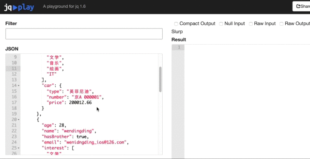
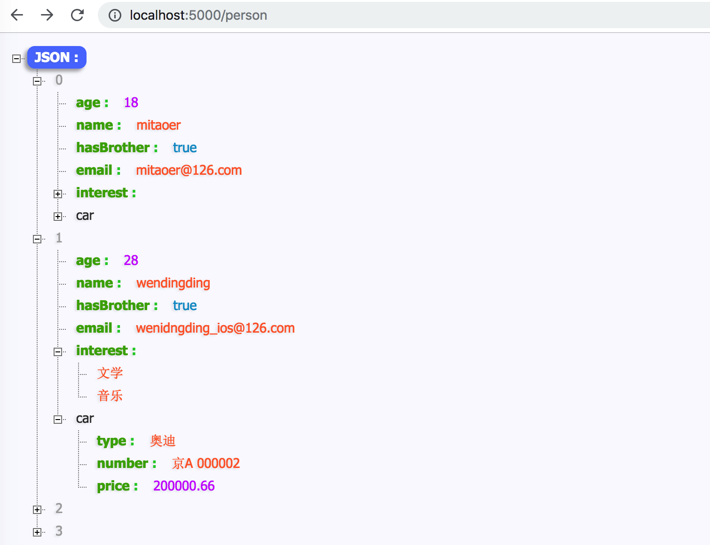
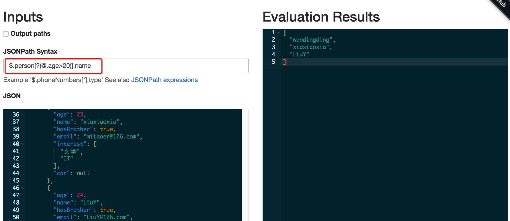
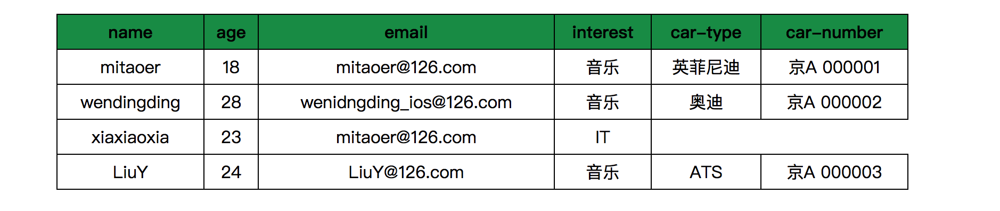
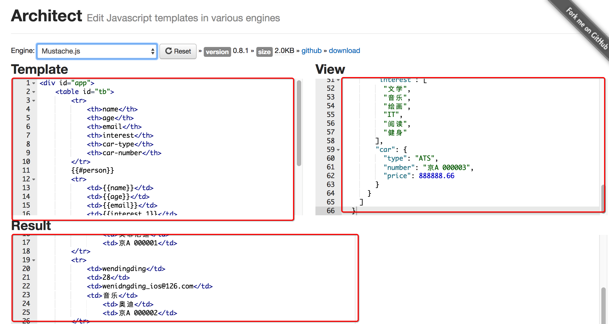
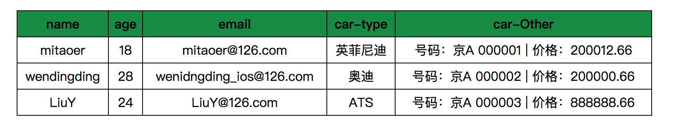

<!DOCTYPE html><html lang="zh-Hans"><head><meta charset="utf-8"><meta name="X-UA-Compatible" content="IE=edge"><title> javaScript系列 [09]-javaScript和JSON (拓展) · 花田半亩</title><meta name="description" content="javaScript系列 [09]-javaScript和JSON (拓展) - 文顶顶"><meta name="viewport" content="width=device-width, initial-scale=1"><link rel="icon" href="/logo.jpeg"><link rel="stylesheet" href="/css/apollo.css"><link rel="search" type="application/opensearchdescription+xml" href="https://weibo.com/u/3800117445/atom.xml" title="花田半亩"><meta name="generator" content="Hexo 5.4.0"><link rel="alternate" href="/atom.xml" title="花田半亩" type="application/atom+xml">
</head><body><div class="wrap"><header><a href="/" class="logo-link"></a><ul class="nav nav-list"><li class="nav-list-item"><a href="/" target="_self" class="nav-list-link">文顶顶</a></li><li class="nav-list-item"><a href="/tags/" target="_self" class="nav-list-link">标签</a></li><li class="nav-list-item"><a href="https://www.cnblogs.com/wendingding/" target="_blank" class="nav-list-link">博客园</a></li><li class="nav-list-item"><a href="https://github.com/flowerField" target="_blank" class="nav-list-link">GITHUB</a></li></ul></header><main class="container"><div class="post"><article class="post-block"><h1 class="post-title">javaScript系列 [09]-javaScript和JSON (拓展)</h1><div class="post-info">Apr 20, 2018<span class="post-count"></span> ✧ 字数统计:8.7k(字) &nbsp;&nbsp; ♨︎ 阅读时长:39(分钟)</div><div class="post-content"><div class='tip'>本文输出JSON搜索和JSON转换相关的内容，是对前两篇文章的补充。</div>

<h3 id="JSON搜索"><a href="#JSON搜索" class="headerlink" title="JSON搜索"></a>JSON搜索</h3><p>在特定的开发场景中，如果服务器端返回的JSON数据异常复杂(可能超过上万行)，那么必然就有对JSON文档进行搜索的需求。在对JSON文档进行搜索的时候，建议使用专业的JSON搜索类库和工具来实现，这可以极大的简化JSON文档搜索的工作并降低工作难度。</p>
<p>JSON搜索的具体适用场景：<span style='color:#195'>对于某次API调用，我们只需要其中的部分数据，这种情况我们就可以根据某个标准来对返回的JSON内容进行搜索和过滤。</span></p>
<p>本文将会先后介绍多款处理JSON搜索的类库(工具)，包括但不限于**<code>JSONPath</code><strong>、</strong><code>JSON Pointer</code><strong>、</strong><code>jq</code><strong>等，在对各种方案进行介绍的时候将会从</strong>方案的优缺点、具体的使用方式**等角度切入，开发中可以根据实际的开发场景和各工具自身的特点来进行选择。</p>
<p><span style='border:1px solid #000;padding:5px 20px;'><strong>工具001 → jq</strong></span></p>
<p><strong><code>jq</code></strong>&nbsp;&nbsp;&nbsp;&nbsp;是一个提供了命令行界面的JSON搜索工具。<br><strong><code>功能</code></strong> 可使用自身特定的查询语法来过滤JSON和截取数组，类似于JSON中的sed。<br><strong><code>生态</code></strong> 除命令行外，拥有优秀的基于Web的jq测试器，甚至Node社区还以npm模块形式发布了<a target="_blank" rel="noopener" href="https://www.npmjs.com/package/jq-tutorial">教程</a>。<br><strong><code>优势</code></strong></p>
<ul>
<li>提供丰富的搜索和过滤功能。</li>
<li>大多数编程语言都对jq提供良好的支持。</li>
<li>jq相关文档质量较高，且拥有友好的交互式教程。</li>
<li>拥有优秀的<a target="_blank" rel="noopener" href="https://jqplay.org/">在线测试工具</a>，能够对查询提供快速反馈。</li>
<li>在命令行中能够很好的与cURL以及管道操作等协同工作。</li>
<li>使用C语言编写的，没有运行时依赖，可运行在Linux，OS X和Windows等平台。</li>
</ul>
<p><strong><code>资料</code></strong> <a target="_blank" rel="noopener" href="https://stedolan.github.io/jq/">官网</a> 、<a target="_blank" rel="noopener" href="https://github.com/stedolan/jq">Github仓库</a> 、 <a target="_blank" rel="noopener" href="http://manpages.ubuntu.com/manpages/bionic/man1/jq.1.html?_ga=2.163034492.1318091186.1542254580-1927231673.1542254580">Ubuntu-jq手册</a> 、 <a target="_blank" rel="noopener" href="http://hyperpolyglot.org/json">Hyperpolyglot JSON工具</a>、<a target="_blank" rel="noopener" href="https://github.com/FasterXML/jackson">Jackson类库</a>、<a target="_blank" rel="noopener" href="https://rubygems.org/gems/ruby-jq">Ruby-jq gem</a><br><strong><code>语法</code></strong></p>
<figure class="highlight plaintext"><table><tr><td class="gutter"><pre><span class="line">1</span><br><span class="line">2</span><br><span class="line">3</span><br><span class="line">4</span><br><span class="line">5</span><br><span class="line">6</span><br><span class="line">7</span><br><span class="line">8</span><br><span class="line">9</span><br><span class="line">10</span><br><span class="line">11</span><br></pre></td><td class="code"><pre><span class="line">======基本语法======</span><br><span class="line">.     输出所有的文档内容。</span><br><span class="line">|     管道符，传递数据流。</span><br><span class="line">.key  输出指定key对应的部分文档。</span><br><span class="line">.[ ]  输出数组中指定索引对应的元素。</span><br><span class="line"></span><br><span class="line">======查询语法示例========</span><br><span class="line">.person[0]	获取JSON文档person数组中的第一个元素。</span><br><span class="line">.person[-1]	获取JSON文档person数组中的最后一个元素。</span><br><span class="line">.person[0:3]	获取JSON文档person数组中的前面三个元素。</span><br><span class="line">.person[] | select (.age&gt;20 ) 获取JSON文档中满足要求(age &gt; 20)的所有数据。</span><br></pre></td></tr></table></figure>
<p><strong><code>安装</code></strong></p>
<ul>
<li>OSX系统 建议使用<a target="_blank" rel="noopener" href="https://brew.sh/">Homebrew</a>来安装，具体命令为：<code>$ brew install jq</code></li>
<li>windows系统 建议使用<a target="_blank" rel="noopener" href="https://chocolatey.org/">Chocolatey NuGet</a>来安装，具体命令为：<code> $ chocolatey install jq</code></li>
<li>当然也可以通过<code>git clone</code>仓库源码来进行安装，具体细节以及其它系统处理请参考<a target="_blank" rel="noopener" href="https://stedolan.github.io/jq/download/">Download jq</a></li>
</ul>
<p>这里给出OSX系统中通过命令行安装<code>jq</code>的具体细节和示例。</p>
<figure class="highlight bash"><table><tr><td class="gutter"><pre><span class="line">1</span><br><span class="line">2</span><br><span class="line">3</span><br><span class="line">4</span><br><span class="line">5</span><br><span class="line">6</span><br><span class="line">7</span><br><span class="line">8</span><br><span class="line">9</span><br><span class="line">10</span><br><span class="line">11</span><br><span class="line">12</span><br><span class="line">13</span><br><span class="line">14</span><br><span class="line">15</span><br><span class="line">16</span><br></pre></td><td class="code"><pre><span class="line">wendingding$ brew install jq</span><br><span class="line">Updating Homebrew...</span><br><span class="line">==&gt; Installing dependencies <span class="keyword">for</span> jq: oniguruma</span><br><span class="line">==&gt; Installing jq dependency: oniguruma</span><br><span class="line">==&gt; Downloading https://homebrew.bintray.com/bottles/oniguruma-6.8.2.high_sierra</span><br><span class="line"><span class="comment">######################################################################## 100.0%</span></span><br><span class="line">==&gt; Pouring oniguruma-6.8.2.high_sierra.bottle.tar.gz</span><br><span class="line">🍺  /usr/<span class="built_in">local</span>/Cellar/oniguruma/6.8.2: 17 files, 1.2MB</span><br><span class="line">==&gt; Installing jq</span><br><span class="line">==&gt; Downloading https://homebrew.bintray.com/bottles/jq-1.5_3.high_sierra.bottle</span><br><span class="line"><span class="comment">######################################################################## 100.0%</span></span><br><span class="line">==&gt; Pouring jq-1.5_3.high_sierra.bottle.tar.gz</span><br><span class="line">🍺  /usr/<span class="built_in">local</span>/Cellar/jq/1.5_3: 19 files, 946.6KB</span><br><span class="line"></span><br><span class="line">wendingding$ jq --version</span><br><span class="line">jq-1.5</span><br></pre></td></tr></table></figure>
<div class='tip'>在安装jq的时候，如果命令行报<span style='color:red'>Error: Failure while executing: git config --local --replace-all homebrew.private true</span>错误，可以尝试先执行`$ xcode-select --install `命令然后重新安装。在安装的时候如果总是卡在Updating Homebrew...可以`control + C`停止更新。</div>

<p><strong><code>工具(jq-tutorial)</code></strong></p>
<p><a target="_blank" rel="noopener" href="https://www.npmjs.com/package/jq-tutorial">jq-tutorial</a>是node社区以npm模块的形式发布的jq教程，是学习jq使用的一个比较好用的工具，这里简单列出该模块的安装和使用示例，并对命令进行简单的说明。</p>
<figure class="highlight bash"><table><tr><td class="gutter"><pre><span class="line">1</span><br><span class="line">2</span><br><span class="line">3</span><br><span class="line">4</span><br><span class="line">5</span><br><span class="line">6</span><br><span class="line">7</span><br><span class="line">8</span><br><span class="line">9</span><br><span class="line">10</span><br><span class="line">11</span><br><span class="line">12</span><br><span class="line">13</span><br><span class="line">14</span><br><span class="line">15</span><br><span class="line">16</span><br><span class="line">17</span><br><span class="line">18</span><br><span class="line">19</span><br><span class="line">20</span><br><span class="line">21</span><br><span class="line">22</span><br><span class="line">23</span><br><span class="line">24</span><br><span class="line">25</span><br><span class="line">26</span><br><span class="line">27</span><br><span class="line">28</span><br><span class="line">29</span><br><span class="line">30</span><br><span class="line">31</span><br><span class="line">32</span><br><span class="line">33</span><br><span class="line">34</span><br><span class="line">35</span><br><span class="line">36</span><br><span class="line">37</span><br><span class="line">38</span><br><span class="line">39</span><br><span class="line">40</span><br><span class="line">41</span><br><span class="line">42</span><br></pre></td><td class="code"><pre><span class="line">wendingding$ npm search jq-tutorial</span><br><span class="line">NAME                      | DESCRIPTION          | AUTHOR          | DATE       </span><br><span class="line">jq-tutorial               | Exercises <span class="keyword">for</span>…       | =rjz            | 2016-09-29 </span><br><span class="line"></span><br><span class="line">wendingding$ npm install -g jq-tutorial</span><br><span class="line">npm WARN notice [SECURITY] lodash has the following vulnerability: 1 low. </span><br><span class="line">Go here <span class="keyword">for</span> more details: https://nodesecurity.io/advisories?search=lodash version=2.4.2 </span><br><span class="line">-Run `npm i npm@latest -g` to upgrade npm version, and <span class="keyword">then</span> `npm audit` to get more info.</span><br><span class="line">/usr/<span class="built_in">local</span>/bin/jq-tutorial -&gt; /usr/<span class="built_in">local</span>/lib/node_modules/jq-tutorial/bin/jq-tutorial</span><br><span class="line">+ jq-tutorial@0.0.5</span><br><span class="line">added 4 packages <span class="keyword">in</span> 20.012s</span><br><span class="line"></span><br><span class="line">wendingding$ jq-tutorial </span><br><span class="line">Run jq-tutorial with one of the following:</span><br><span class="line">  * pick</span><br><span class="line">  * objects</span><br><span class="line">  * mapping</span><br><span class="line">  * filtering</span><br><span class="line">  * output</span><br><span class="line">  * reduce</span><br><span class="line"></span><br><span class="line">wendingding$ jq-tutorial pick</span><br><span class="line">Pick</span><br><span class="line">========================================</span><br><span class="line"><span class="comment">### Pick fields from an object</span></span><br><span class="line">`jq` retrieves named properties from objects by using `.` syntax:</span><br><span class="line">    $ <span class="built_in">echo</span> <span class="string">&#x27;&#123;&quot;foo&quot;: &#123; &quot;bar&quot;: &quot;a value&quot; &#125;&#125;&#x27;</span> | jq .foo</span><br><span class="line">Nested values are accessible as well:</span><br><span class="line">    $ <span class="built_in">echo</span> <span class="string">&#x27;&#123;&quot;foo&quot;: &#123; &quot;bar&quot;: &quot;a value&quot; &#125;&#125;&#x27;</span> | jq .foo.bar</span><br><span class="line"><span class="comment">### Pick elements from an array:</span></span><br><span class="line">Elements <span class="keyword">in</span> an array may be extracted by index:</span><br><span class="line">    $ <span class="built_in">echo</span> <span class="string">&#x27;[&quot;snap&quot;,&quot;crackle&quot;,&quot;pop&quot;]&#x27;</span> | jq .[1]</span><br><span class="line">More than one index? No problem!</span><br><span class="line">    $ <span class="built_in">echo</span> <span class="string">&#x27;[&quot;snap&quot;,&quot;crackle&quot;,&quot;pop&quot;]&#x27;</span> | jq .[1, 2]</span><br><span class="line">We can even extract *all* elements at once by omitting the indices:</span><br><span class="line">    $ <span class="built_in">echo</span> <span class="string">&#x27;[&quot;snap&quot;,&quot;crackle&quot;,&quot;pop&quot;]&#x27;</span> | jq .[]</span><br><span class="line"><span class="built_in">type</span> <span class="string">&quot;data?&quot;</span> to see dataset or <span class="string">&quot;help?&quot;</span> <span class="keyword">for</span> more options</span><br><span class="line">--------------------------------</span><br><span class="line"></span><br><span class="line">Given:    <span class="string">&#x27;product&#x27;</span> (<span class="built_in">type</span> <span class="string">&quot;data?&quot;</span> to view)</span><br><span class="line">Challenge: Select the entire item (hint: don<span class="string">&#x27;t overthink this!):</span></span><br><span class="line"><span class="string">&gt; </span></span><br></pre></td></tr></table></figure>
<p><strong><code>工具(jqPlay)</code></strong></p>
<p><a target="_blank" rel="noopener" href="https://jqplay.org/">jqPlay</a>是一个基于web的jq在线测试游乐场，它提供了对JSON数据进行jq查询的基本功能，而且提供了简单的jq查询语法示例，能够对查询进行快速反馈。</p>


<p><strong>基本用法演示</strong></p>
<p>这里我先提供一个稍复杂的JSON数据,数据保存在<code>/JSON-Demo/data.json路径</code>(<a target="_blank" rel="noopener" href="https://github.com/flowerField/Source/blob/master/Blog/data.json">您可以点击此链接获取该数据</a>)。为了演示方便，这里我将会把该文档的数据部署为RESTful API，从而创建一个模拟的API服务。在具体的处理中，将使用到名为<a target="_blank" rel="noopener" href="https://github.com/typicode/json-server">json-server</a>的Node模块，下面列出具体的细节。</p>
<figure class="highlight bash"><table><tr><td class="gutter"><pre><span class="line">1</span><br><span class="line">2</span><br><span class="line">3</span><br><span class="line">4</span><br><span class="line">5</span><br><span class="line">6</span><br><span class="line">7</span><br><span class="line">8</span><br><span class="line">9</span><br><span class="line">10</span><br><span class="line">11</span><br><span class="line">12</span><br><span class="line">13</span><br><span class="line">14</span><br><span class="line">15</span><br><span class="line">16</span><br><span class="line">17</span><br><span class="line">18</span><br><span class="line">19</span><br><span class="line">20</span><br><span class="line">21</span><br><span class="line">22</span><br><span class="line">23</span><br></pre></td><td class="code"><pre><span class="line">wendingding$ <span class="built_in">pwd</span></span><br><span class="line">/Users/文顶顶/Desktop/JSON-Demo</span><br><span class="line"></span><br><span class="line">wendingding$ npm install -g json-server</span><br><span class="line">/usr/<span class="built_in">local</span>/bin/json-server -&gt; /usr/<span class="built_in">local</span>/lib/node_modules/json-server/bin/index.js</span><br><span class="line">+ json-server@0.14.0</span><br><span class="line">added 223 packages <span class="keyword">in</span> 23.03s</span><br><span class="line"></span><br><span class="line">wendingding$ json-server -p 5000 ./data.json</span><br><span class="line"></span><br><span class="line">  \&#123;^_^&#125;/ hi!</span><br><span class="line"></span><br><span class="line">  Loading ./data.json</span><br><span class="line">  Done</span><br><span class="line"></span><br><span class="line">  Resources</span><br><span class="line">  http://localhost:5000/person</span><br><span class="line"></span><br><span class="line">  Home</span><br><span class="line">  http://localhost:5000</span><br><span class="line"></span><br><span class="line">  Type s + enter at any time to create a snapshot of the database</span><br><span class="line">GET /person 304 16.355 ms - -</span><br></pre></td></tr></table></figure>
<p>执行<code>$json-server -p 5000 ./data.json</code>命令之后，我们可以在浏览器中通过<a href="">http://localhost:5000/person</a>地址来访问JSON文档中的数据，下面是显示结果。</p>


<p><strong>备注：</strong>如果经常需要通过浏览器访问和显示JSON数据，建议安装相应的JSON扩展插件，我电脑Chrome安装的是<a target="_blank" rel="noopener" href="http://jsonhandle.sinaapp.com/">JSON-handle</a>，同类型的还有<a target="_blank" rel="noopener" href="https://github.com/gildas-lormeau/JSONView-for-Chrome/tree/master/WebContent">JSONView</a>。</p>
<p>下面列出jq命令行工具的使用示例以及主要命令行的解读说明。</p>
<figure class="highlight bash"><table><tr><td class="gutter"><pre><span class="line">1</span><br><span class="line">2</span><br><span class="line">3</span><br><span class="line">4</span><br><span class="line">5</span><br><span class="line">6</span><br><span class="line">7</span><br><span class="line">8</span><br><span class="line">9</span><br><span class="line">10</span><br><span class="line">11</span><br><span class="line">12</span><br><span class="line">13</span><br><span class="line">14</span><br><span class="line">15</span><br><span class="line">16</span><br><span class="line">17</span><br><span class="line">18</span><br><span class="line">19</span><br><span class="line">20</span><br><span class="line">21</span><br><span class="line">22</span><br><span class="line">23</span><br><span class="line">24</span><br><span class="line">25</span><br><span class="line">26</span><br><span class="line">27</span><br><span class="line">28</span><br><span class="line">29</span><br><span class="line">30</span><br><span class="line">31</span><br><span class="line">32</span><br><span class="line">33</span><br><span class="line">34</span><br><span class="line">35</span><br><span class="line">36</span><br><span class="line">37</span><br><span class="line">38</span><br><span class="line">39</span><br><span class="line">40</span><br><span class="line">41</span><br><span class="line">42</span><br><span class="line">43</span><br><span class="line">44</span><br><span class="line">45</span><br><span class="line">46</span><br><span class="line">47</span><br><span class="line">48</span><br><span class="line">49</span><br><span class="line">50</span><br><span class="line">51</span><br><span class="line">52</span><br><span class="line">53</span><br><span class="line">54</span><br><span class="line">55</span><br><span class="line">56</span><br><span class="line">57</span><br><span class="line">58</span><br><span class="line">59</span><br><span class="line">60</span><br><span class="line">61</span><br><span class="line">62</span><br><span class="line">63</span><br><span class="line">64</span><br><span class="line">65</span><br><span class="line">66</span><br><span class="line">67</span><br><span class="line">68</span><br><span class="line">69</span><br><span class="line">70</span><br><span class="line">71</span><br><span class="line">72</span><br><span class="line">73</span><br><span class="line">74</span><br><span class="line">75</span><br><span class="line">76</span><br><span class="line">77</span><br><span class="line">78</span><br><span class="line">79</span><br><span class="line">80</span><br><span class="line">81</span><br><span class="line">82</span><br><span class="line">83</span><br><span class="line">84</span><br><span class="line">85</span><br><span class="line">86</span><br><span class="line">87</span><br><span class="line">88</span><br><span class="line">89</span><br><span class="line">90</span><br><span class="line">91</span><br><span class="line">92</span><br><span class="line">93</span><br><span class="line">94</span><br><span class="line">95</span><br><span class="line">96</span><br><span class="line">97</span><br><span class="line">98</span><br><span class="line">99</span><br><span class="line">100</span><br><span class="line">101</span><br><span class="line">102</span><br><span class="line">103</span><br><span class="line">104</span><br><span class="line">105</span><br><span class="line">106</span><br><span class="line">107</span><br><span class="line">108</span><br><span class="line">109</span><br><span class="line">110</span><br><span class="line">111</span><br><span class="line">112</span><br><span class="line">113</span><br><span class="line">114</span><br><span class="line">115</span><br><span class="line">116</span><br><span class="line">117</span><br><span class="line">118</span><br><span class="line">119</span><br><span class="line">120</span><br><span class="line">121</span><br><span class="line">122</span><br><span class="line">123</span><br><span class="line">124</span><br><span class="line">125</span><br><span class="line">126</span><br><span class="line">127</span><br><span class="line">128</span><br><span class="line">129</span><br><span class="line">130</span><br><span class="line">131</span><br><span class="line">132</span><br><span class="line">133</span><br><span class="line">134</span><br><span class="line">135</span><br><span class="line">136</span><br><span class="line">137</span><br><span class="line">138</span><br><span class="line">139</span><br><span class="line">140</span><br><span class="line">141</span><br><span class="line">142</span><br><span class="line">143</span><br><span class="line">144</span><br><span class="line">145</span><br><span class="line">146</span><br><span class="line">147</span><br><span class="line">148</span><br><span class="line">149</span><br><span class="line">150</span><br><span class="line">151</span><br><span class="line">152</span><br><span class="line">153</span><br><span class="line">154</span><br><span class="line">155</span><br><span class="line">156</span><br><span class="line">157</span><br><span class="line">158</span><br><span class="line">159</span><br><span class="line">160</span><br><span class="line">161</span><br><span class="line">162</span><br><span class="line">163</span><br><span class="line">164</span><br><span class="line">165</span><br><span class="line">166</span><br><span class="line">167</span><br><span class="line">168</span><br><span class="line">169</span><br><span class="line">170</span><br><span class="line">171</span><br><span class="line">172</span><br><span class="line">173</span><br><span class="line">174</span><br><span class="line">175</span><br><span class="line">176</span><br><span class="line">177</span><br><span class="line">178</span><br><span class="line">179</span><br><span class="line">180</span><br><span class="line">181</span><br><span class="line">182</span><br><span class="line">183</span><br><span class="line">184</span><br><span class="line">185</span><br><span class="line">186</span><br><span class="line">187</span><br><span class="line">188</span><br><span class="line">189</span><br><span class="line">190</span><br><span class="line">191</span><br><span class="line">192</span><br><span class="line">193</span><br><span class="line">194</span><br><span class="line">195</span><br><span class="line">196</span><br><span class="line">197</span><br><span class="line">198</span><br><span class="line">199</span><br><span class="line">200</span><br><span class="line">201</span><br><span class="line">202</span><br><span class="line">203</span><br><span class="line">204</span><br><span class="line">205</span><br><span class="line">206</span><br><span class="line">207</span><br></pre></td><td class="code"><pre><span class="line">wendingding$ curl http://localhost:5000/person | jq <span class="string">&#x27;.&#x27;</span></span><br><span class="line">  % Total    % Received % Xferd  Average Speed   Time    Time     Time  Current</span><br><span class="line">                                 Dload  Upload   Total   Spent    Left  Speed</span><br><span class="line">100  1047  100  1047    0     0   169k      0 --:--:-- --:--:-- --:--:--  255k</span><br><span class="line">[</span><br><span class="line">  &#123;</span><br><span class="line">    <span class="string">&quot;age&quot;</span>: 18,</span><br><span class="line">    <span class="string">&quot;name&quot;</span>: <span class="string">&quot;mitaoer&quot;</span>,</span><br><span class="line">    <span class="string">&quot;hasBrother&quot;</span>: <span class="literal">true</span>,</span><br><span class="line">    <span class="string">&quot;email&quot;</span>: <span class="string">&quot;mitaoer@126.com&quot;</span>,</span><br><span class="line">    <span class="string">&quot;interest&quot;</span>: [</span><br><span class="line">      <span class="string">&quot;文学&quot;</span>,</span><br><span class="line">      <span class="string">&quot;音乐&quot;</span>,</span><br><span class="line">      <span class="string">&quot;绘画&quot;</span>,</span><br><span class="line">      <span class="string">&quot;IT&quot;</span></span><br><span class="line">    ],</span><br><span class="line">    <span class="string">&quot;car&quot;</span>: &#123;</span><br><span class="line">      <span class="string">&quot;type&quot;</span>: <span class="string">&quot;英菲尼迪&quot;</span>,</span><br><span class="line">      <span class="string">&quot;number&quot;</span>: <span class="string">&quot;京A 000001&quot;</span>,</span><br><span class="line">      <span class="string">&quot;price&quot;</span>: 200012.66</span><br><span class="line">    &#125;</span><br><span class="line">  &#125;,</span><br><span class="line">  &#123;</span><br><span class="line">    <span class="string">&quot;age&quot;</span>: 28,</span><br><span class="line">    <span class="string">&quot;name&quot;</span>: <span class="string">&quot;wendingding&quot;</span>,</span><br><span class="line">    <span class="string">&quot;hasBrother&quot;</span>: <span class="literal">true</span>,</span><br><span class="line">    <span class="string">&quot;email&quot;</span>: <span class="string">&quot;wenidngding_ios@126.com&quot;</span>,</span><br><span class="line">    <span class="string">&quot;interest&quot;</span>: [</span><br><span class="line">      <span class="string">&quot;文学&quot;</span>,</span><br><span class="line">      <span class="string">&quot;音乐&quot;</span></span><br><span class="line">    ],</span><br><span class="line">    <span class="string">&quot;car&quot;</span>: &#123;</span><br><span class="line">      <span class="string">&quot;type&quot;</span>: <span class="string">&quot;奥迪&quot;</span>,</span><br><span class="line">      <span class="string">&quot;number&quot;</span>: <span class="string">&quot;京A 000002&quot;</span>,</span><br><span class="line">      <span class="string">&quot;price&quot;</span>: 200000.66</span><br><span class="line">    &#125;</span><br><span class="line">  &#125;,</span><br><span class="line">  &#123;</span><br><span class="line">    <span class="string">&quot;age&quot;</span>: 23,</span><br><span class="line">    <span class="string">&quot;name&quot;</span>: <span class="string">&quot;xiaxiaoxia&quot;</span>,</span><br><span class="line">    <span class="string">&quot;hasBrother&quot;</span>: <span class="literal">true</span>,</span><br><span class="line">    <span class="string">&quot;email&quot;</span>: <span class="string">&quot;mitaoer@126.com&quot;</span>,</span><br><span class="line">    <span class="string">&quot;interest&quot;</span>: [</span><br><span class="line">      <span class="string">&quot;文学&quot;</span>,</span><br><span class="line">      <span class="string">&quot;IT&quot;</span></span><br><span class="line">    ],</span><br><span class="line">    <span class="string">&quot;car&quot;</span>: null</span><br><span class="line">  &#125;,</span><br><span class="line">  &#123;</span><br><span class="line">    <span class="string">&quot;age&quot;</span>: 24,</span><br><span class="line">    <span class="string">&quot;name&quot;</span>: <span class="string">&quot;LiuY&quot;</span>,</span><br><span class="line">    <span class="string">&quot;hasBrother&quot;</span>: <span class="literal">true</span>,</span><br><span class="line">    <span class="string">&quot;email&quot;</span>: <span class="string">&quot;LiuY@126.com&quot;</span>,</span><br><span class="line">    <span class="string">&quot;interest&quot;</span>: [</span><br><span class="line">      <span class="string">&quot;文学&quot;</span>,</span><br><span class="line">      <span class="string">&quot;音乐&quot;</span>,</span><br><span class="line">      <span class="string">&quot;绘画&quot;</span>,</span><br><span class="line">      <span class="string">&quot;IT&quot;</span>,</span><br><span class="line">      <span class="string">&quot;阅读&quot;</span>,</span><br><span class="line">      <span class="string">&quot;健身&quot;</span></span><br><span class="line">    ],</span><br><span class="line">    <span class="string">&quot;car&quot;</span>: &#123;</span><br><span class="line">      <span class="string">&quot;type&quot;</span>: <span class="string">&quot;ATS&quot;</span>,</span><br><span class="line">      <span class="string">&quot;number&quot;</span>: <span class="string">&quot;京A 000003&quot;</span>,</span><br><span class="line">      <span class="string">&quot;price&quot;</span>: 888888.66</span><br><span class="line">    &#125;</span><br><span class="line">  &#125;</span><br><span class="line">]</span><br><span class="line"></span><br><span class="line">wendingding$ curl http://localhost:5000/person | jq <span class="string">&#x27;.[1]&#x27;</span></span><br><span class="line">  % Total    % Received % Xferd  Average Speed   Time    Time     Time  Current</span><br><span class="line">                                 Dload  Upload   Total   Spent    Left  Speed</span><br><span class="line">100  1047  100  1047    0     0   140k      0 --:--:-- --:--:-- --:--:--  255k</span><br><span class="line">&#123;</span><br><span class="line">  <span class="string">&quot;age&quot;</span>: 28,</span><br><span class="line">  <span class="string">&quot;name&quot;</span>: <span class="string">&quot;wendingding&quot;</span>,</span><br><span class="line">  <span class="string">&quot;hasBrother&quot;</span>: <span class="literal">true</span>,</span><br><span class="line">  <span class="string">&quot;email&quot;</span>: <span class="string">&quot;wenidngding_ios@126.com&quot;</span>,</span><br><span class="line">  <span class="string">&quot;interest&quot;</span>: [</span><br><span class="line">    <span class="string">&quot;文学&quot;</span>,</span><br><span class="line">    <span class="string">&quot;音乐&quot;</span></span><br><span class="line">  ],</span><br><span class="line">  <span class="string">&quot;car&quot;</span>: &#123;</span><br><span class="line">    <span class="string">&quot;type&quot;</span>: <span class="string">&quot;奥迪&quot;</span>,</span><br><span class="line">    <span class="string">&quot;number&quot;</span>: <span class="string">&quot;京A 000002&quot;</span>,</span><br><span class="line">    <span class="string">&quot;price&quot;</span>: 200000.66</span><br><span class="line">  &#125;</span><br><span class="line">&#125;</span><br><span class="line"></span><br><span class="line">wendingding$ curl http://localhost:5000/person | jq <span class="string">&#x27;.[1].name&#x27;</span></span><br><span class="line">  % Total    % Received % Xferd  Average Speed   Time    Time     Time  Current</span><br><span class="line">                                 Dload  Upload   Total   Spent    Left  Speed</span><br><span class="line">100  1047  100  1047    0     0   171k      0 --:--:-- --:--:-- --:--:--  255k</span><br><span class="line"><span class="string">&quot;wendingding&quot;</span></span><br><span class="line"></span><br><span class="line">wendingding$ curl http://localhost:5000/person | jq <span class="string">&#x27;.[1].email&#x27;</span></span><br><span class="line">  % Total    % Received % Xferd  Average Speed   Time    Time     Time  Current</span><br><span class="line">                                 Dload  Upload   Total   Spent    Left  Speed</span><br><span class="line">100  1047  100  1047    0     0   106k      0 --:--:-- --:--:-- --:--:--  127k</span><br><span class="line"><span class="string">&quot;wenidngding_ios@126.com&quot;</span></span><br><span class="line"></span><br><span class="line">wendingding$ curl http://localhost:5000/person | jq <span class="string">&#x27;.[1] | &#123;name,age&#125;&#x27;</span></span><br><span class="line">  % Total    % Received % Xferd  Average Speed   Time    Time     Time  Current</span><br><span class="line">                                 Dload  Upload   Total   Spent    Left  Speed</span><br><span class="line">100  1047  100  1047    0     0   161k      0 --:--:-- --:--:-- --:--:--  204k</span><br><span class="line">&#123;</span><br><span class="line">  <span class="string">&quot;name&quot;</span>: <span class="string">&quot;wendingding&quot;</span>,</span><br><span class="line">  <span class="string">&quot;age&quot;</span>: 28</span><br><span class="line">&#125;</span><br><span class="line"></span><br><span class="line">wendingding$ curl http://localhost:5000/person | jq <span class="string">&#x27;.[1] | &#123;newName:.name,newAge:.age&#125;&#x27;</span></span><br><span class="line">  % Total    % Received % Xferd  Average Speed   Time    Time     Time  Current</span><br><span class="line">                                 Dload  Upload   Total   Spent    Left  Speed</span><br><span class="line">100  1047  100  1047    0     0   153k      0 --:--:-- --:--:-- --:--:--  204k</span><br><span class="line">&#123;</span><br><span class="line">  <span class="string">&quot;newName&quot;</span>: <span class="string">&quot;wendingding&quot;</span>,</span><br><span class="line">  <span class="string">&quot;newAge&quot;</span>: 28</span><br><span class="line">&#125;</span><br><span class="line"></span><br><span class="line">wendingding$ curl http://localhost:5000/person | jq <span class="string">&#x27;.[] | select (.age &gt;=24)&#x27;</span></span><br><span class="line">  % Total    % Received % Xferd  Average Speed   Time    Time     Time  Current</span><br><span class="line">                                 Dload  Upload   Total   Spent    Left  Speed</span><br><span class="line">100  1047  100  1047    0     0   167k      0 --:--:-- --:--:-- --:--:--  255k</span><br><span class="line">&#123;</span><br><span class="line">  <span class="string">&quot;age&quot;</span>: 28,</span><br><span class="line">  <span class="string">&quot;name&quot;</span>: <span class="string">&quot;wendingding&quot;</span>,</span><br><span class="line">  <span class="string">&quot;hasBrother&quot;</span>: <span class="literal">true</span>,</span><br><span class="line">  <span class="string">&quot;email&quot;</span>: <span class="string">&quot;wenidngding_ios@126.com&quot;</span>,</span><br><span class="line">  <span class="string">&quot;interest&quot;</span>: [</span><br><span class="line">    <span class="string">&quot;文学&quot;</span>,</span><br><span class="line">    <span class="string">&quot;音乐&quot;</span></span><br><span class="line">  ],</span><br><span class="line">  <span class="string">&quot;car&quot;</span>: &#123;</span><br><span class="line">    <span class="string">&quot;type&quot;</span>: <span class="string">&quot;奥迪&quot;</span>,</span><br><span class="line">    <span class="string">&quot;number&quot;</span>: <span class="string">&quot;京A 000002&quot;</span>,</span><br><span class="line">    <span class="string">&quot;price&quot;</span>: 200000.66</span><br><span class="line">  &#125;</span><br><span class="line">&#125;</span><br><span class="line">&#123;</span><br><span class="line">  <span class="string">&quot;age&quot;</span>: 24,</span><br><span class="line">  <span class="string">&quot;name&quot;</span>: <span class="string">&quot;LiuY&quot;</span>,</span><br><span class="line">  <span class="string">&quot;hasBrother&quot;</span>: <span class="literal">true</span>,</span><br><span class="line">  <span class="string">&quot;email&quot;</span>: <span class="string">&quot;LiuY@126.com&quot;</span>,</span><br><span class="line">  <span class="string">&quot;interest&quot;</span>: [</span><br><span class="line">    <span class="string">&quot;文学&quot;</span>,</span><br><span class="line">    <span class="string">&quot;音乐&quot;</span>,</span><br><span class="line">    <span class="string">&quot;绘画&quot;</span>,</span><br><span class="line">    <span class="string">&quot;IT&quot;</span>,</span><br><span class="line">    <span class="string">&quot;阅读&quot;</span>,</span><br><span class="line">    <span class="string">&quot;健身&quot;</span></span><br><span class="line">  ],</span><br><span class="line">  <span class="string">&quot;car&quot;</span>: &#123;</span><br><span class="line">    <span class="string">&quot;type&quot;</span>: <span class="string">&quot;ATS&quot;</span>,</span><br><span class="line">    <span class="string">&quot;number&quot;</span>: <span class="string">&quot;京A 000003&quot;</span>,</span><br><span class="line">    <span class="string">&quot;price&quot;</span>: 888888.66</span><br><span class="line">  &#125;</span><br><span class="line">&#125;</span><br><span class="line"></span><br><span class="line">wendingding$ curl http://localhost:5000/person | jq <span class="string">&#x27;.[1,3] | &#123;name,email&#125;&#x27;</span></span><br><span class="line">  % Total    % Received % Xferd  Average Speed   Time    Time     Time  Current</span><br><span class="line">                                 Dload  Upload   Total   Spent    Left  Speed</span><br><span class="line">100  1047  100  1047    0     0   162k      0 --:--:-- --:--:-- --:--:--  255k</span><br><span class="line">&#123;</span><br><span class="line">  <span class="string">&quot;name&quot;</span>: <span class="string">&quot;wendingding&quot;</span>,</span><br><span class="line">  <span class="string">&quot;email&quot;</span>: <span class="string">&quot;wenidngding_ios@126.com&quot;</span></span><br><span class="line">&#125;</span><br><span class="line">&#123;</span><br><span class="line">  <span class="string">&quot;name&quot;</span>: <span class="string">&quot;LiuY&quot;</span>,</span><br><span class="line">  <span class="string">&quot;email&quot;</span>: <span class="string">&quot;LiuY@126.com&quot;</span></span><br><span class="line">&#125;</span><br><span class="line"></span><br><span class="line">wendingding$ curl http://localhost:5000/person | jq <span class="string">&#x27;.[1,3] | [&#123;name,email&#125;]&#x27;</span></span><br><span class="line">  % Total    % Received % Xferd  Average Speed   Time    Time     Time  Current</span><br><span class="line">                                 Dload  Upload   Total   Spent    Left  Speed</span><br><span class="line">100  1047  100  1047    0     0   165k      0 --:--:-- --:--:-- --:--:--  255k</span><br><span class="line">[</span><br><span class="line">  &#123;</span><br><span class="line">    <span class="string">&quot;name&quot;</span>: <span class="string">&quot;wendingding&quot;</span>,</span><br><span class="line">    <span class="string">&quot;email&quot;</span>: <span class="string">&quot;wenidngding_ios@126.com&quot;</span></span><br><span class="line">  &#125;</span><br><span class="line">]</span><br><span class="line">[</span><br><span class="line">  &#123;</span><br><span class="line">    <span class="string">&quot;name&quot;</span>: <span class="string">&quot;LiuY&quot;</span>,</span><br><span class="line">    <span class="string">&quot;email&quot;</span>: <span class="string">&quot;LiuY@126.com&quot;</span></span><br><span class="line">  &#125;</span><br><span class="line">]</span><br><span class="line">wendingding$ touch test.json</span><br><span class="line"></span><br><span class="line">wendingding$ curl http://localhost:5000/person | jq <span class="string">&#x27;.[1,3] | [&#123;name,email&#125;]&#x27;</span> &gt; test.json</span><br><span class="line">  % Total    % Received % Xferd  Average Speed   Time    Time     Time  Current</span><br><span class="line">                                 Dload  Upload   Total   Spent    Left  Speed</span><br><span class="line">100  1047  100  1047    0     0   143k      0 --:--:-- --:--:-- --:--:--  204k</span><br><span class="line">wendingding$ cat test.json </span><br><span class="line">[</span><br><span class="line">  &#123;</span><br><span class="line">    <span class="string">&quot;name&quot;</span>: <span class="string">&quot;wendingding&quot;</span>,</span><br><span class="line">    <span class="string">&quot;email&quot;</span>: <span class="string">&quot;wenidngding_ios@126.com&quot;</span></span><br><span class="line">  &#125;</span><br><span class="line">]</span><br><span class="line">[</span><br><span class="line">  &#123;</span><br><span class="line">    <span class="string">&quot;name&quot;</span>: <span class="string">&quot;LiuY&quot;</span>,</span><br><span class="line">    <span class="string">&quot;email&quot;</span>: <span class="string">&quot;LiuY@126.com&quot;</span></span><br><span class="line">  &#125;</span><br><span class="line">]</span><br><span class="line"></span><br></pre></td></tr></table></figure>
<p><strong><code>主要命令说明[为方便阅读，命令行中的xxx均代表的是http://localhost:5000/person路径]</code></strong></p>
<p><code>$ curl xxx | jq &#39;.&#39;</code> 获取API返回的所有JSON数据。<br><code>$ curl xxx | jq &#39;.[1]&#39;</code> 获取JSON文档中person数组的第2个元素内容。<br><code>$ curl xxx | jq &#39;.[1].name&#39;</code> 获取JSON文档中person数组的第2个元素(对象)中的name属性值。<br><code>$ curl xxx | jq &#39;.[1] | &#123;name,age&#125;&#39;</code> 获取数组第2个元素(对象)的name和age键值对组成新对象。<br><code>$ curl xxx | jq &#39;.[1,3] | &#123;name,email&#125;&#39;</code> 获取数组第2和第4个元素中的name和email值组成对象。<br><code>$ curl xxx | jq &#39;.[] | select (.age &gt;=24)&#39;</code> 获取JSON文档中所有age属性值&gt;=24的对象元素集合。</p>
<p><strong><code>补充</code></strong> 如果需要在Node中使用jq,那么可以安装并使用require导入<a target="_blank" rel="noopener" href="https://www.npmjs.com/package/node-jq">node-jq</a>模块。</p>
<p><span style='border:1px solid #000;padding:5px 20px;'><strong>工具002 → JSONPath</strong></span></p>
<p><strong><code>定位</code></strong> 是一款可用于对JSON文档进行搜索和数据提取操作类库。<br><strong><code>历史</code></strong> 由<a target="_blank" rel="noopener" href="https://goessner.net/">Stefan Goessner</a>于2007年开发，最开始的版本使用JavaScript实现。<br><strong><code>功能</code></strong> 能够对JSON文档进行搜索和数据提取，它的查询语法基于<a target="_blank" rel="noopener" href="http://www.w3school.com.cn/xpath/index.asp">XPath</a>实现。<br><strong><code>生态</code></strong> JSONPath没有提供命令行操作实现，但提供了优秀的<a target="_blank" rel="noopener" href="http://jsonpath.com/">在线测试工具</a>和<a target="_blank" rel="noopener" href="https://www.npmjs.com/package/jsonpath">Node模块</a>。<br><strong><code>优势</code></strong></p>
<ul>
<li>具有丰富的查询语法。</li>
<li>查询语句可以返回文档中的多个元素。</li>
<li>大多数的主流平台都对JSONPath提供支持。</li>
<li>拥有很高的社区使用率，优秀的在线测试工具对开发者更友好。</li>
</ul>
<p><strong><code>资料</code></strong> <a target="_blank" rel="noopener" href="https://www.npmjs.com/package/jsonpath">jsonpath Node模块</a> 、<a target="_blank" rel="noopener" href="http://jsonpath.com/">在线测试网站</a> 、<a target="_blank" rel="noopener" href="https://github.com/json-path/JsonPath">Github仓库</a>、<a target="_blank" rel="noopener" href="https://goessner.net/">Stefan Goessner主页</a></p>
<table>
<thead>
<tr>
<th align="left">语法</th>
<th align="left">描述</th>
</tr>
</thead>
<tbody><tr>
<td align="left"><code>$</code></td>
<td align="left">根节点</td>
</tr>
<tr>
<td align="left"><code>@</code></td>
<td align="left">当前节点的筛选器属性处理</td>
</tr>
<tr>
<td align="left"><code>*</code></td>
<td align="left">通配符，匹配任何属性名称</td>
</tr>
<tr>
<td align="left"><code>..</code></td>
<td align="left">通配符，匹配任意层次的节点</td>
</tr>
<tr>
<td align="left"><code>[]</code></td>
<td align="left">迭代器标示，同数组索引</td>
</tr>
<tr>
<td align="left"><code>[,]</code></td>
<td align="left">迭代器标示，迭代器多选</td>
</tr>
<tr>
<td align="left"><code>[start:end]</code></td>
<td align="left">数组切片运算符</td>
</tr>
<tr>
<td align="left"><code>[?(&lt;expression&gt;)]</code></td>
<td align="left">过滤表达式，求值必须为布尔值</td>
</tr>
</tbody></table>
<hr>
<p><strong><code>查询语法示例</code></strong></p>
<figure class="highlight html"><table><tr><td class="gutter"><pre><span class="line">1</span><br><span class="line">2</span><br><span class="line">3</span><br><span class="line">4</span><br><span class="line">5</span><br><span class="line">6</span><br><span class="line">7</span><br><span class="line">8</span><br><span class="line">9</span><br><span class="line">10</span><br><span class="line">11</span><br><span class="line">12</span><br><span class="line">13</span><br><span class="line">14</span><br><span class="line">15</span><br><span class="line">16</span><br><span class="line">17</span><br><span class="line">18</span><br><span class="line">19</span><br></pre></td><td class="code"><pre><span class="line">//备注：参考的JSON数据为前文使用的data.json文件</span><br><span class="line">$                       获取整个JSON文档的内容</span><br><span class="line">$.person                获取JSON文档中person数组的内容</span><br><span class="line">$.person.length         获取JSON文档中person数组的长度(元素个数)</span><br><span class="line"></span><br><span class="line">$.person[0]             获取JSON文档中person数组第一个元素的内容</span><br><span class="line">$.person[:1]            获取JSON文档中person数组第一个元素的内容</span><br><span class="line">$.person[-1:]           获取JSON文档中person数组最后一个元素的内容</span><br><span class="line">$.person[(@.length-1)]  获取JSON文档中person数组最后一个元素的内容</span><br><span class="line"></span><br><span class="line">$.person[:2]            获取JSON文档中person数组前两个元素的内容</span><br><span class="line">$.person[0,3]           获取JSON文档中person数组第1和4第个元素的内容</span><br><span class="line">$.person[0::2]          获取JSON文档中person数组指定元素的内容(隔一个元素抽取)</span><br><span class="line">$.person[:2].name       获取JSON文档中person数组前两个元素中的name值</span><br><span class="line"></span><br><span class="line">$..name                 获取JSON文档中所有的name子元素内容</span><br><span class="line">$.person[?(@.age &gt;23)]  获取JSON文档中age值大于23的所有元素</span><br><span class="line">$.person[?(@.age &gt;23)].age  获取JSON文档中age值大于23的所有元素中的age值信息</span><br><span class="line">$.person[?(@.age &gt;20 &amp;&amp; @.interest.length == 2)].name 满足多个条件的筛选</span><br></pre></td></tr></table></figure>
<p><strong><code>工具(jsonpath在线测试网站)</code></strong></p>
<p>jsonpath提供了对应的<a target="_blank" rel="noopener" href="http://jsonpath.com/">在线测试网站</a>，给指定JSON文档输入对应的jsonpath查询语句能够快速看到最终效果。使用该测试工具来可以”重量级的”复杂JSON数据进行快速的筛选，输入查询语句后马上就能够在右侧看到查询后的结果。如果开发者原本不了解查询语法，那也可以通过该工具来快速的学习，下面给出简单的图示。</p>


<div class='tip'>**注意** [jsonpath](https://jsonpath.org/)在线测试工具在使用的时候，总是会把查询的结果保存到[ ]的结构中。</div>

<p><strong><code>工具(node模块jsonpath)</code></strong></p>
<p>JSONPath本身没有命令行工具，除了上面介绍的在线测试网站之外，我们还能在代码中使用node社区发布的<a target="_blank" rel="noopener" href="https://www.npmjs.com/package/jsonpath">jsonpath模块</a>实现JSON的搜索任务。下面给出一个简单的单元测试示例(列出源码和执行情况)。</p>
<p><strong>001 先列出单元测试相关的代码</strong></p>
<figure class="highlight javascript"><table><tr><td class="gutter"><pre><span class="line">1</span><br><span class="line">2</span><br><span class="line">3</span><br><span class="line">4</span><br><span class="line">5</span><br><span class="line">6</span><br><span class="line">7</span><br><span class="line">8</span><br><span class="line">9</span><br><span class="line">10</span><br><span class="line">11</span><br><span class="line">12</span><br><span class="line">13</span><br><span class="line">14</span><br><span class="line">15</span><br><span class="line">16</span><br><span class="line">17</span><br><span class="line">18</span><br><span class="line">19</span><br><span class="line">20</span><br><span class="line">21</span><br><span class="line">22</span><br><span class="line">23</span><br><span class="line">24</span><br><span class="line">25</span><br><span class="line">26</span><br><span class="line">27</span><br><span class="line">28</span><br><span class="line">29</span><br><span class="line">30</span><br><span class="line">31</span><br><span class="line">32</span><br><span class="line">33</span><br><span class="line">34</span><br><span class="line">35</span><br><span class="line">36</span><br><span class="line">37</span><br><span class="line">38</span><br><span class="line">39</span><br><span class="line">40</span><br><span class="line">41</span><br><span class="line">42</span><br><span class="line">43</span><br><span class="line">44</span><br><span class="line">45</span><br><span class="line">46</span><br><span class="line">47</span><br><span class="line">48</span><br><span class="line">49</span><br><span class="line">50</span><br><span class="line">51</span><br><span class="line">52</span><br><span class="line">53</span><br><span class="line">54</span><br><span class="line">55</span><br><span class="line">56</span><br><span class="line">57</span><br><span class="line">58</span><br><span class="line">59</span><br><span class="line">60</span><br><span class="line">61</span><br><span class="line">62</span><br><span class="line">63</span><br><span class="line">64</span><br><span class="line">65</span><br><span class="line">66</span><br></pre></td><td class="code"><pre><span class="line"><span class="comment">//jsonpath-test.js文件内容</span></span><br><span class="line"><span class="keyword">var</span> unirest  = <span class="built_in">require</span>(<span class="string">&quot;unirest&quot;</span>);</span><br><span class="line"><span class="keyword">var</span> jsonPath = <span class="built_in">require</span>(<span class="string">&quot;jsonpath&quot;</span>);</span><br><span class="line"><span class="keyword">var</span> expect   = <span class="built_in">require</span>(<span class="string">&quot;chai&quot;</span>).expect;</span><br><span class="line"></span><br><span class="line">describe(<span class="string">&quot;wendingding-test&quot;</span>,<span class="function"><span class="keyword">function</span>(<span class="params"></span>)</span>&#123;</span><br><span class="line">    <span class="keyword">var</span> request ;</span><br><span class="line">    beforeEach(<span class="function"><span class="keyword">function</span>(<span class="params"></span>)</span>&#123;</span><br><span class="line">        request = unirest.get(<span class="string">&quot;http://localhost:5000/person&quot;</span>)</span><br><span class="line">        .header(<span class="string">&quot;Accept&quot;</span>,<span class="string">&quot;application/json&quot;</span>);</span><br><span class="line">    &#125;)</span><br><span class="line"></span><br><span class="line">    it(<span class="string">&quot;return 200 状态码&quot;</span>,<span class="function"><span class="keyword">function</span>(<span class="params">done</span>)</span>&#123;</span><br><span class="line">        request.end(<span class="function"><span class="keyword">function</span>(<span class="params">response</span>)</span>&#123;</span><br><span class="line">            expect(response.statusCode).to.eql(<span class="number">200</span>);</span><br><span class="line">            expect(response.headers[<span class="string">&quot;content-type&quot;</span>])</span><br><span class="line">            .to.eql(<span class="string">&quot;application/json; charset=utf-8&quot;</span>);</span><br><span class="line">            done();</span><br><span class="line">        &#125;)</span><br><span class="line">    &#125;)</span><br><span class="line"></span><br><span class="line">    it(<span class="string">&quot;return 所有的JOSN数据&quot;</span>,<span class="function"><span class="keyword">function</span>(<span class="params">done</span>)</span>&#123;</span><br><span class="line">        request.end(<span class="function"><span class="keyword">function</span>(<span class="params">response</span>)</span>&#123;</span><br><span class="line">            expect(response.body.length).to.eql(<span class="number">4</span>);</span><br><span class="line">            done();</span><br><span class="line">        &#125;)</span><br><span class="line">    &#125;)</span><br><span class="line"></span><br><span class="line">    it(<span class="string">&quot;return 所有的JOSN数据中第一个元素      -- $[1]&quot;</span>,<span class="function"><span class="keyword">function</span>(<span class="params">done</span>)</span>&#123;</span><br><span class="line">        request.end(<span class="function"><span class="keyword">function</span>(<span class="params">response</span>)</span>&#123;</span><br><span class="line">            <span class="keyword">var</span> resultData = jsonPath.query(response.body,<span class="string">&quot;$[1]&quot;</span>);</span><br><span class="line">            expect(resultData[<span class="number">0</span>].name).to.eql(<span class="string">&quot;wendingding&quot;</span>);</span><br><span class="line">            done();</span><br><span class="line">        &#125;)</span><br><span class="line">    &#125;)</span><br><span class="line"></span><br><span class="line">    it(<span class="string">&quot;return 所有的JOSN数据中最后一个元素[1] -- $[-1:]&quot;</span>,<span class="function"><span class="keyword">function</span>(<span class="params">done</span>)</span>&#123;</span><br><span class="line">        request.end(<span class="function"><span class="keyword">function</span>(<span class="params">response</span>)</span>&#123;</span><br><span class="line">            <span class="keyword">var</span> resultData = jsonPath.query(response.body,<span class="string">&quot;$[-1:]&quot;</span>);</span><br><span class="line">            expect(resultData[<span class="number">0</span>].email).to.eql(<span class="string">&quot;LiuY@126.com&quot;</span>);</span><br><span class="line">            done();</span><br><span class="line">        &#125;)</span><br><span class="line">    &#125;)</span><br><span class="line"></span><br><span class="line">    it(<span class="string">&quot;return 所有的JOSN数据中最后一个元素[2] -- $[(@.length-1)]&quot;</span>,<span class="function"><span class="keyword">function</span>(<span class="params">done</span>)</span>&#123;</span><br><span class="line">        request.end(<span class="function"><span class="keyword">function</span>(<span class="params">response</span>)</span>&#123; </span><br><span class="line">            <span class="keyword">var</span> resultData = jsonPath.query(response.body,<span class="string">&quot;$[(@.length-1)]&quot;</span>);</span><br><span class="line">            expect(resultData[<span class="number">0</span>].email).to.eql(<span class="string">&quot;LiuY@126.com&quot;</span>);</span><br><span class="line">            done();</span><br><span class="line">        &#125;)</span><br><span class="line">    &#125;)</span><br><span class="line"></span><br><span class="line">    it(<span class="string">&quot;return 所有的JOSN数据中满足条件元素     -- $[?(@.age &gt;= 23)]&quot;</span>,<span class="function"><span class="keyword">function</span>(<span class="params">done</span>)</span>&#123;</span><br><span class="line">        request.end(<span class="function"><span class="keyword">function</span>(<span class="params">response</span>)</span>&#123;</span><br><span class="line">            <span class="keyword">var</span> data = response.body;  </span><br><span class="line">            <span class="keyword">var</span> resultData = jsonPath.query(data,<span class="string">&quot;$[?(@.age &gt;= 23)]&quot;</span>);</span><br><span class="line">            <span class="comment">//console.log(resultData)</span></span><br><span class="line">            expect(resultData.length).to.eql(<span class="number">3</span>);</span><br><span class="line">            <span class="keyword">for</span>(<span class="keyword">var</span> i = <span class="number">0</span> ;i&lt;resultData.length;i++)</span><br><span class="line">            &#123;</span><br><span class="line">                expect(resultData[i].age).to.be.at.least(<span class="number">23</span>);</span><br><span class="line">            &#125;</span><br><span class="line">            done();</span><br><span class="line">        &#125;)</span><br><span class="line">    &#125;)</span><br><span class="line">&#125;)</span><br></pre></td></tr></table></figure>
<p><strong>002 列出代码的具体执行细节</strong></p>
<figure class="highlight bash"><table><tr><td class="gutter"><pre><span class="line">1</span><br><span class="line">2</span><br><span class="line">3</span><br><span class="line">4</span><br><span class="line">5</span><br><span class="line">6</span><br><span class="line">7</span><br><span class="line">8</span><br><span class="line">9</span><br><span class="line">10</span><br><span class="line">11</span><br><span class="line">12</span><br><span class="line">13</span><br><span class="line">14</span><br><span class="line">15</span><br><span class="line">16</span><br><span class="line">17</span><br><span class="line">18</span><br><span class="line">19</span><br><span class="line">20</span><br></pre></td><td class="code"><pre><span class="line">wendingding$ <span class="built_in">pwd</span> </span><br><span class="line">/Users/文顶顶/Desktop/jsonPath-demo</span><br><span class="line">wendingding$ npm <span class="built_in">test</span></span><br><span class="line"></span><br><span class="line">&gt; jsonpath-demo@1.0.0 <span class="built_in">test</span> /Users/文顶顶/Desktop/jsonPath-demo</span><br><span class="line">&gt; mocha</span><br><span class="line"></span><br><span class="line"></span><br><span class="line"></span><br><span class="line">  wendingding-test</span><br><span class="line">    ✓ <span class="built_in">return</span> 200 状态码</span><br><span class="line">    ✓ <span class="built_in">return</span> 所有的JOSN数据</span><br><span class="line">    ✓ <span class="built_in">return</span> 所有的JOSN数据中第一个元素      -- $[1]</span><br><span class="line">    ✓ <span class="built_in">return</span> 所有的JOSN数据中最后一个元素[1] -- $[-1:]</span><br><span class="line">    ✓ <span class="built_in">return</span> 所有的JOSN数据中最后一个元素[2] -- $[(@.length-1)]</span><br><span class="line">    ✓ <span class="built_in">return</span> 所有的JOSN数据中满足条件元素    -- $[?(@.age &gt;= 23)]</span><br><span class="line"></span><br><span class="line"></span><br><span class="line">  6 passing (92ms)</span><br><span class="line"></span><br></pre></td></tr></table></figure>

<p><strong>003 代码说明</strong></p>
<p>〇 示例代码中使用了<a target="_blank" rel="noopener" href="https://mochajs.org/">Mocha</a>、<a target="_blank" rel="noopener" href="http://unirest.io/">Unirest</a>测试框架，jsonpath查询模块以及<a target="_blank" rel="noopener" href="https://www.chaijs.com/">Chai</a>模块中的断言结构。<br>① 示例代码中的每一个<code>it</code>就代表着一个测试用例。<br>② 示例代码中我们在Mocha的<code>beforeEach()方法</code>中对请求信息进行了配置。<br>③ 示例代码中在describe语句定义的范围内，每次执行测试用例之前都会先运行一次beforeEach方法。</p>
<p><strong>004 执行备注</strong></p>
<p>这里简单说明上面代码的执行环境和处理过程。</p>
<figure class="highlight bash"><table><tr><td class="gutter"><pre><span class="line">1</span><br><span class="line">2</span><br><span class="line">3</span><br><span class="line">4</span><br><span class="line">5</span><br><span class="line">6</span><br><span class="line">7</span><br><span class="line">8</span><br><span class="line">9</span><br><span class="line">10</span><br><span class="line">11</span><br><span class="line">12</span><br><span class="line">13</span><br><span class="line">14</span><br><span class="line">15</span><br><span class="line">16</span><br><span class="line">17</span><br><span class="line">18</span><br><span class="line">19</span><br><span class="line">20</span><br><span class="line">21</span><br><span class="line">22</span><br><span class="line">23</span><br><span class="line">24</span><br><span class="line">25</span><br><span class="line">26</span><br><span class="line">27</span><br><span class="line">28</span><br><span class="line">29</span><br><span class="line">30</span><br><span class="line">31</span><br><span class="line">32</span><br><span class="line">33</span><br><span class="line">34</span><br><span class="line">35</span><br><span class="line">36</span><br><span class="line">37</span><br><span class="line">38</span><br><span class="line">39</span><br><span class="line">40</span><br><span class="line">41</span><br><span class="line">42</span><br><span class="line">43</span><br><span class="line">44</span><br><span class="line">45</span><br><span class="line">46</span><br><span class="line">47</span><br><span class="line">48</span><br><span class="line">49</span><br><span class="line">50</span><br><span class="line">51</span><br><span class="line">52</span><br><span class="line">53</span><br><span class="line">54</span><br><span class="line">55</span><br><span class="line">56</span><br><span class="line">57</span><br><span class="line">58</span><br><span class="line">59</span><br><span class="line">60</span><br><span class="line">61</span><br></pre></td><td class="code"><pre><span class="line">[1]  在电脑中指定的路径创建文件夹，并通过命令行进入到该路径。</span><br><span class="line"></span><br><span class="line">$ mkdir JSON-TEST</span><br><span class="line">$ <span class="built_in">cd</span> JSON-TEST/</span><br><span class="line">$ <span class="built_in">pwd</span></span><br><span class="line">    /Users/文顶顶/Desktop/JSON-TEST</span><br><span class="line"></span><br><span class="line">[2] 初始化并安装必要的node模块。</span><br><span class="line"></span><br><span class="line">$ npm init  //默认回车即可</span><br><span class="line">$ npm install -g mocha</span><br><span class="line">$ npm install --save-dev mocha</span><br><span class="line">$ npm install --save-dev unirest</span><br><span class="line">$ npm install -save-dev jsonpath</span><br><span class="line">$ npm install --save-dev chai</span><br><span class="line"></span><br><span class="line">[3] 修改package.json文件中的scripts项为<span class="string">&quot;test&quot;</span>: <span class="string">&quot;mocha&quot;</span>。</span><br><span class="line"></span><br><span class="line">wendingding$ cat package.json </span><br><span class="line">&#123;</span><br><span class="line">  <span class="string">&quot;name&quot;</span>: <span class="string">&quot;json-test&quot;</span>,</span><br><span class="line">  <span class="string">&quot;version&quot;</span>: <span class="string">&quot;1.0.0&quot;</span>,</span><br><span class="line">  <span class="string">&quot;description&quot;</span>: <span class="string">&quot;&quot;</span>,</span><br><span class="line">  <span class="string">&quot;main&quot;</span>: <span class="string">&quot;index.js&quot;</span>,</span><br><span class="line">  <span class="string">&quot;scripts&quot;</span>: &#123;</span><br><span class="line">    <span class="string">&quot;test&quot;</span>: <span class="string">&quot;mocha&quot;</span></span><br><span class="line">  &#125;,</span><br><span class="line">  <span class="string">&quot;author&quot;</span>: <span class="string">&quot;&quot;</span>,</span><br><span class="line">  <span class="string">&quot;license&quot;</span>: <span class="string">&quot;ISC&quot;</span>,</span><br><span class="line">  <span class="string">&quot;devDependencies&quot;</span>: &#123;</span><br><span class="line">    <span class="string">&quot;chai&quot;</span>: <span class="string">&quot;^4.2.0&quot;</span>,</span><br><span class="line">    <span class="string">&quot;jsonpath&quot;</span>: <span class="string">&quot;^1.0.0&quot;</span>,</span><br><span class="line">    <span class="string">&quot;mocha&quot;</span>: <span class="string">&quot;^5.2.0&quot;</span>,</span><br><span class="line">    <span class="string">&quot;unirest&quot;</span>: <span class="string">&quot;^0.5.1&quot;</span></span><br><span class="line">  &#125;</span><br><span class="line">&#125;</span><br><span class="line"></span><br><span class="line">[4] 在当前目录下创建<span class="built_in">test</span>文件夹，并在该文件夹中创建测试文件(此处命名为json-test.js)。</span><br><span class="line"></span><br><span class="line">$ mkdir <span class="built_in">test</span></span><br><span class="line">$ <span class="built_in">cd</span> <span class="built_in">test</span>/</span><br><span class="line">$ touch json-test.js</span><br><span class="line"></span><br><span class="line">[5] 编辑json-test.js文件的内容(前文已经给出),列出文件目录。</span><br><span class="line">.</span><br><span class="line">├── node_modules</span><br><span class="line">│   ├── JSONSelect</span><br><span class="line">│   ...省略</span><br><span class="line">│   ├── chai</span><br><span class="line">│   ├── jsonpath</span><br><span class="line">│   ├── mocha</span><br><span class="line">│   ├── unirest</span><br><span class="line">│   └── xtend</span><br><span class="line">├── package-lock.json</span><br><span class="line">├── package.json</span><br><span class="line">└── <span class="built_in">test</span></span><br><span class="line">    └── json-test.js</span><br><span class="line"></span><br><span class="line">[6] 执行测试。</span><br><span class="line"></span><br><span class="line">$ npm <span class="built_in">test</span></span><br></pre></td></tr></table></figure>

<p><span style='border:1px solid #000;padding:5px 20px;'><strong>工具003 → JSON Pointer</strong></span></p>
<p><a target="_blank" rel="noopener" href="https://tools.ietf.org/html/rfc6901">JSON Pointer</a>本身是一项用于获取JSON文档中特定值的标准。JSON Pointer设计的主要目标在于支持JSON Schema标准中的$ref（请参考JSON进阶一文）。</p>
<p>目前，大多数的主流平台(包括<span style='color:#f09'><strong>Node\Ruby on Rails\Ptyhon\Java</strong></span>等)都已经包含JSON Pointer相关的类库。Java，Jackson已支持JSON Pointer查询语法，javaEE 8将提供原生支持；Node中则可以在社区中找到并使用<a target="_blank" rel="noopener" href="https://www.npmjs.com/package/json-pointer">json-pointer模块</a>来对JSON文档进行处理。</p>
<table>
<thead>
<tr>
<th align="left">语法</th>
<th align="left">描述</th>
</tr>
</thead>
<tbody><tr>
<td align="left"><code>/data</code></td>
<td align="left">获取JSON文档中某个key对应的所有数据</td>
</tr>
<tr>
<td align="left"><code>/data/index</code></td>
<td align="left">获取指定索引对应的数据</td>
</tr>
<tr>
<td align="left"><code>/data/index/key</code></td>
<td align="left">获取指定索引对应的数据并通过key来取值</td>
</tr>
</tbody></table>
<p><a target="_blank" rel="noopener" href="https://tools.ietf.org/html/rfc6901">JSON Pointer</a>的查询语法简洁高效，其工作机制是以<code>/</code>来表示路径分隔，以<code>索引|下标</code>来获取指定的内容，索引总是从0开始。下面给出简短的查询语法示例：</p>
<figure class="highlight html"><table><tr><td class="gutter"><pre><span class="line">1</span><br><span class="line">2</span><br><span class="line">3</span><br><span class="line">4</span><br></pre></td><td class="code"><pre><span class="line">//备注：参考的JSON数据为前文使用的data.json文件</span><br><span class="line">/person                 获取JSON文档中person的内容</span><br><span class="line">/person/0               获取JSON文档中person数组的第一项内容</span><br><span class="line">/person/0/name          获取JSON文档中person数组的第一项内容中的name值</span><br></pre></td></tr></table></figure>
<div class='tip'>**注意** JSON Pointer标准中，查询操作的结果总只包含数据值而不会包含相关的键名。</div>

<p>这里将使用node社区的<a target="_blank" rel="noopener" href="https://www.npmjs.com/package/json-pointer">json-pointer</a>模块简单演示node平台中对JSON文档的处理。下面列出核心单元测试代码(在测试的时候需要先安装对应的模块)。</p>
<figure class="highlight javascript"><table><tr><td class="gutter"><pre><span class="line">1</span><br><span class="line">2</span><br><span class="line">3</span><br><span class="line">4</span><br><span class="line">5</span><br><span class="line">6</span><br><span class="line">7</span><br><span class="line">8</span><br><span class="line">9</span><br><span class="line">10</span><br><span class="line">11</span><br><span class="line">12</span><br><span class="line">13</span><br><span class="line">14</span><br><span class="line">15</span><br><span class="line">16</span><br><span class="line">17</span><br><span class="line">18</span><br><span class="line">19</span><br><span class="line">20</span><br><span class="line">21</span><br><span class="line">22</span><br><span class="line">23</span><br><span class="line">24</span><br><span class="line">25</span><br><span class="line">26</span><br><span class="line">27</span><br><span class="line">28</span><br><span class="line">29</span><br><span class="line">30</span><br><span class="line">31</span><br><span class="line">32</span><br><span class="line">33</span><br><span class="line">34</span><br><span class="line">35</span><br><span class="line">36</span><br><span class="line">37</span><br><span class="line">38</span><br><span class="line">39</span><br><span class="line">40</span><br><span class="line">41</span><br><span class="line">42</span><br><span class="line">43</span><br><span class="line">44</span><br><span class="line">45</span><br></pre></td><td class="code"><pre><span class="line"><span class="keyword">var</span> expect = <span class="built_in">require</span>(<span class="string">&quot;chai&quot;</span>).expect;</span><br><span class="line"><span class="keyword">var</span> pointer = <span class="built_in">require</span>(<span class="string">&quot;json-pointer&quot;</span>);</span><br><span class="line"><span class="keyword">var</span> unirest = <span class="built_in">require</span>(<span class="string">&quot;unirest&quot;</span>);</span><br><span class="line"></span><br><span class="line">describe(<span class="string">&quot;wendingding-test&quot;</span>,<span class="function"><span class="keyword">function</span>(<span class="params"></span>)</span>&#123;</span><br><span class="line">    <span class="keyword">var</span> request ;</span><br><span class="line">    beforeEach(<span class="function"><span class="keyword">function</span>(<span class="params"></span>)</span>&#123;</span><br><span class="line">        request = unirest.get(<span class="string">&quot;http://localhost:5000/person&quot;</span>)</span><br><span class="line">        .header(<span class="string">&quot;Accept&quot;</span>,<span class="string">&quot;application/json&quot;</span>);</span><br><span class="line">    &#125;)</span><br><span class="line"></span><br><span class="line">    it(<span class="string">&quot;return 200 状态码&quot;</span>,<span class="function"><span class="keyword">function</span>(<span class="params">done</span>)</span>&#123;</span><br><span class="line">        request.end(<span class="function"><span class="keyword">function</span>(<span class="params">response</span>)</span>&#123;</span><br><span class="line">            expect(response.statusCode).to.eql(<span class="number">200</span>);</span><br><span class="line">            expect(response.headers[<span class="string">&quot;content-type&quot;</span>])</span><br><span class="line">            .to.eql(<span class="string">&quot;application/json; charset=utf-8&quot;</span>);</span><br><span class="line">            done();</span><br><span class="line">        &#125;)</span><br><span class="line">    &#125;)</span><br><span class="line"></span><br><span class="line">    it(<span class="string">&quot;return 所有的JOSN数据&quot;</span>,<span class="function"><span class="keyword">function</span>(<span class="params">done</span>)</span>&#123;</span><br><span class="line">        request.end(<span class="function"><span class="keyword">function</span>(<span class="params">response</span>)</span>&#123;</span><br><span class="line">            expect(response.body.length).to.eql(<span class="number">4</span>);</span><br><span class="line">            done();</span><br><span class="line">        &#125;)</span><br><span class="line">    &#125;)</span><br><span class="line"></span><br><span class="line">    it(<span class="string">&quot;return Person数组中的第一个元素 /person/0&quot;</span>,<span class="function"><span class="keyword">function</span>(<span class="params">done</span>)</span>&#123;</span><br><span class="line">        request.end(<span class="function"><span class="keyword">function</span>(<span class="params">response</span>)</span>&#123;</span><br><span class="line">            <span class="keyword">var</span> resultData = pointer.get(response.body,<span class="string">&quot;/0&quot;</span>);</span><br><span class="line">            <span class="built_in">console</span>.log(<span class="string">&quot;\n&quot;</span>,resultData,<span class="string">&quot;\n&quot;</span>);</span><br><span class="line">            expect(resultData.name).to.eql(<span class="string">&quot;mitaoer&quot;</span>);</span><br><span class="line">            done();</span><br><span class="line">        &#125;)</span><br><span class="line">    &#125;)</span><br><span class="line"></span><br><span class="line">    it(<span class="string">&quot;return Person数组中的第三个元素中interest的值 /person/2/interest&quot;</span>,<span class="function"><span class="keyword">function</span>(<span class="params">done</span>)</span>&#123;</span><br><span class="line">        request.end(<span class="function"><span class="keyword">function</span>(<span class="params">response</span>)</span>&#123;</span><br><span class="line">            <span class="keyword">var</span> resultData = pointer.get(response.body,<span class="string">&quot;/2/interest&quot;</span>);</span><br><span class="line">            <span class="built_in">console</span>.log(<span class="string">&quot;\t&quot;</span>,resultData);</span><br><span class="line">            expect(resultData.length).to.eql(<span class="number">2</span>);</span><br><span class="line">            done();</span><br><span class="line">        &#125;)</span><br><span class="line">    &#125;)</span><br><span class="line">&#125;)</span><br></pre></td></tr></table></figure>
<p>简单列出执行情况：</p>
<figure class="highlight bash"><table><tr><td class="gutter"><pre><span class="line">1</span><br><span class="line">2</span><br><span class="line">3</span><br><span class="line">4</span><br><span class="line">5</span><br><span class="line">6</span><br><span class="line">7</span><br><span class="line">8</span><br><span class="line">9</span><br><span class="line">10</span><br><span class="line">11</span><br><span class="line">12</span><br><span class="line">13</span><br><span class="line">14</span><br><span class="line">15</span><br><span class="line">16</span><br><span class="line">17</span><br><span class="line">18</span><br><span class="line">19</span><br><span class="line">20</span><br><span class="line">21</span><br></pre></td><td class="code"><pre><span class="line">wendingding$ npm <span class="built_in">test</span></span><br><span class="line">&gt; json-pointer-demo@1.0.0 <span class="built_in">test</span> /Users/文顶顶/Desktop/JSON-Pointer</span><br><span class="line">&gt; mocha</span><br><span class="line"></span><br><span class="line">  wendingding-test</span><br><span class="line">    ✓ <span class="built_in">return</span> 200 状态码</span><br><span class="line">    ✓ <span class="built_in">return</span> 所有的JOSN数据</span><br><span class="line"></span><br><span class="line">      &#123; age: 18,</span><br><span class="line">        name: <span class="string">&#x27;mitaoer&#x27;</span>,</span><br><span class="line">        hasBrother: <span class="literal">true</span>,</span><br><span class="line">        email: <span class="string">&#x27;mitaoer@126.com&#x27;</span>,</span><br><span class="line">        interest: [ <span class="string">&#x27;文学&#x27;</span>, <span class="string">&#x27;音乐&#x27;</span>, <span class="string">&#x27;绘画&#x27;</span>, <span class="string">&#x27;IT&#x27;</span> ],</span><br><span class="line">        car: &#123; <span class="built_in">type</span>: <span class="string">&#x27;英菲尼迪&#x27;</span>, number: <span class="string">&#x27;京A 000001&#x27;</span>, price: 200012.66 &#125; </span><br><span class="line">      &#125; </span><br><span class="line">    ✓ <span class="built_in">return</span> Person数组中的第一个元素 /person/0</span><br><span class="line">	    [ <span class="string">&#x27;文学&#x27;</span>, <span class="string">&#x27;IT&#x27;</span> ]</span><br><span class="line">    ✓ <span class="built_in">return</span> Person数组中的第三个元素中interest的值 /person/2/interest</span><br><span class="line"></span><br><span class="line">  4 passing (66ms)</span><br><span class="line"></span><br></pre></td></tr></table></figure>

<h3 id="JSON转换"><a href="#JSON转换" class="headerlink" title="JSON转换"></a>JSON转换</h3><h4 id="JSON-→-HTML结构-渲染"><a href="#JSON-→-HTML结构-渲染" class="headerlink" title="JSON → HTML结构(渲染)"></a>JSON → HTML结构(渲染)</h4><p>将JSON数据转换(处理)为HTML的操作我们应该都很熟悉，在前端开发和移动端开发领域中，这一部分的操作通常和网络请求紧密联系，业务流程基本都是先发请求获取服务器端返回的(JSON)数据，然后通过序列化的方法来对数据进行解析，也就是反序列化处理(通常是将JSON数据转换为编程语言中对应的数据结构比如数组或者是对象)，最终再根据得到的数据来更新UI。</p>
<p>现在前端开发中这都属于基本操作，甚至像Vue这样类似的框架中<code>数据绑定</code>已经是其最最基础的一部分了。虽然如此，为了文章的完整性，这里还是会简单介绍<code>Mustache</code>和<code>Handlebars</code>两个类库在JSON转换中的运用。</p>
<p><span style='border:1px solid #000;padding:5px 20px;'><strong>Mustache</strong></span></p>
<p><strong><code>简介</code></strong> Mustache使用声明式模板来转换数据格。<br><strong><code>资料</code></strong> <a target="_blank" rel="noopener" href="https://mustache.github.io/">Mustache</a>、<a target="_blank" rel="noopener" href="https://github.com/mustache/mustache.github.com">Mustache Github</a>、<a target="_blank" rel="noopener" href="http://mustache.github.io/mustache.5.html">Mustache 5说明文档</a><br><strong><code>优势</code></strong> 使用模板可以从代码中抽取具体的数据信息，并将数据保存在外部的文件中，实现关注点分离。</p>
<p>接下来我将通过一个简短的示例来说明Mustache的语法以及其使用方式，<a target="_blank" rel="noopener" href="https://github.com/flowerField/Source/blob/master/Blog/Tem-TEST.zip">您可以点击该链接获取完整的项目内容</a>。为了对介绍Mustache的使用，这里我列出项目中的部分内容并做简要说明。</p>
<p>001 列出模板核心内容</p>
<figure class="highlight html"><table><tr><td class="gutter"><pre><span class="line">1</span><br><span class="line">2</span><br><span class="line">3</span><br><span class="line">4</span><br><span class="line">5</span><br><span class="line">6</span><br><span class="line">7</span><br><span class="line">8</span><br><span class="line">9</span><br><span class="line">10</span><br><span class="line">11</span><br><span class="line">12</span><br><span class="line">13</span><br><span class="line">14</span><br><span class="line">15</span><br><span class="line">16</span><br><span class="line">17</span><br><span class="line">18</span><br><span class="line">19</span><br><span class="line">20</span><br><span class="line">21</span><br><span class="line">22</span><br><span class="line">23</span><br><span class="line">24</span><br><span class="line">25</span><br></pre></td><td class="code"><pre><span class="line">//备注：../Tem-TEST/src/index.mustache文件的核心内容</span><br><span class="line"><span class="tag">&lt;<span class="name">div</span> <span class="attr">id</span>=<span class="string">&quot;app&quot;</span>&gt;</span></span><br><span class="line">    <span class="tag">&lt;<span class="name">table</span> <span class="attr">id</span>=<span class="string">&quot;tb&quot;</span>&gt;</span></span><br><span class="line">        <span class="tag">&lt;<span class="name">tr</span>&gt;</span></span><br><span class="line">            <span class="tag">&lt;<span class="name">th</span>&gt;</span>name<span class="tag">&lt;/<span class="name">th</span>&gt;</span></span><br><span class="line">            <span class="tag">&lt;<span class="name">th</span>&gt;</span>age<span class="tag">&lt;/<span class="name">th</span>&gt;</span></span><br><span class="line">            <span class="tag">&lt;<span class="name">th</span>&gt;</span>email<span class="tag">&lt;/<span class="name">th</span>&gt;</span></span><br><span class="line">            <span class="tag">&lt;<span class="name">th</span>&gt;</span>interest<span class="tag">&lt;/<span class="name">th</span>&gt;</span></span><br><span class="line">            <span class="tag">&lt;<span class="name">th</span>&gt;</span>car-type<span class="tag">&lt;/<span class="name">th</span>&gt;</span></span><br><span class="line">            <span class="tag">&lt;<span class="name">th</span>&gt;</span>car-number<span class="tag">&lt;/<span class="name">th</span>&gt;</span></span><br><span class="line">        <span class="tag">&lt;/<span class="name">tr</span>&gt;</span></span><br><span class="line">        &#123;&#123;#person&#125;&#125;</span><br><span class="line">        <span class="tag">&lt;<span class="name">tr</span>&gt;</span></span><br><span class="line">            <span class="tag">&lt;<span class="name">td</span>&gt;</span>&#123;&#123;name&#125;&#125;<span class="tag">&lt;/<span class="name">td</span>&gt;</span></span><br><span class="line">            <span class="tag">&lt;<span class="name">td</span>&gt;</span>&#123;&#123;age&#125;&#125;<span class="tag">&lt;/<span class="name">td</span>&gt;</span></span><br><span class="line">            <span class="tag">&lt;<span class="name">td</span>&gt;</span>&#123;&#123;email&#125;&#125;<span class="tag">&lt;/<span class="name">td</span>&gt;</span></span><br><span class="line">            <span class="tag">&lt;<span class="name">td</span>&gt;</span>&#123;&#123;interest.1&#125;&#125;<span class="tag">&lt;/<span class="name">td</span>&gt;</span></span><br><span class="line">            &#123;&#123;#car&#125;&#125;</span><br><span class="line">                <span class="tag">&lt;<span class="name">td</span>&gt;</span>&#123;&#123;type&#125;&#125;<span class="tag">&lt;/<span class="name">td</span>&gt;</span></span><br><span class="line">                <span class="tag">&lt;<span class="name">td</span>&gt;</span>&#123;&#123;number&#125;&#125;<span class="tag">&lt;/<span class="name">td</span>&gt;</span></span><br><span class="line">            &#123;&#123;/car&#125;&#125;</span><br><span class="line">        <span class="tag">&lt;/<span class="name">tr</span>&gt;</span></span><br><span class="line">        &#123;&#123;/person&#125;&#125;</span><br><span class="line">    <span class="tag">&lt;/<span class="name">table</span>&gt;</span></span><br><span class="line"><span class="tag">&lt;/<span class="name">div</span>&gt;</span></span><br></pre></td></tr></table></figure>

<p>002 列出单元测试代码</p>
<figure class="highlight javascript"><table><tr><td class="gutter"><pre><span class="line">1</span><br><span class="line">2</span><br><span class="line">3</span><br><span class="line">4</span><br><span class="line">5</span><br><span class="line">6</span><br><span class="line">7</span><br><span class="line">8</span><br><span class="line">9</span><br><span class="line">10</span><br><span class="line">11</span><br><span class="line">12</span><br><span class="line">13</span><br><span class="line">14</span><br><span class="line">15</span><br><span class="line">16</span><br><span class="line">17</span><br><span class="line">18</span><br><span class="line">19</span><br><span class="line">20</span><br><span class="line">21</span><br><span class="line">22</span><br><span class="line">23</span><br><span class="line">24</span><br><span class="line">25</span><br><span class="line">26</span><br><span class="line">27</span><br><span class="line">28</span><br><span class="line">29</span><br><span class="line">30</span><br><span class="line">31</span><br><span class="line">32</span><br><span class="line">33</span><br><span class="line">34</span><br><span class="line">35</span><br><span class="line">36</span><br><span class="line">37</span><br><span class="line">38</span><br><span class="line">39</span><br><span class="line">40</span><br><span class="line">41</span><br><span class="line">42</span><br><span class="line">43</span><br><span class="line">44</span><br></pre></td><td class="code"><pre><span class="line"><span class="comment">//备注：../Tem-TEST/test/mustache-test.js文件内容</span></span><br><span class="line"><span class="keyword">var</span> fs = <span class="built_in">require</span>(<span class="string">&quot;fs&quot;</span>);</span><br><span class="line"><span class="keyword">var</span> expect = <span class="built_in">require</span>(<span class="string">&quot;chai&quot;</span>).expect;</span><br><span class="line"><span class="keyword">var</span> jsonfile = <span class="built_in">require</span>(<span class="string">&quot;jsonfile&quot;</span>);</span><br><span class="line"><span class="keyword">var</span> mustache = <span class="built_in">require</span>(<span class="string">&quot;mustache&quot;</span>);</span><br><span class="line"></span><br><span class="line">describe(<span class="string">&quot;wendingding-mustache-test&quot;</span>,<span class="function"><span class="keyword">function</span>(<span class="params"></span>)</span>&#123;</span><br><span class="line">  </span><br><span class="line">    <span class="comment">//文件的目录结构：json文件路径 + 模板文件路径 + 目标文件路径</span></span><br><span class="line">    <span class="keyword">var</span> jsonFileFullPath     = __dirname + <span class="string">&quot;/../src/data.json&quot;</span>;</span><br><span class="line">    <span class="keyword">var</span> templateFileFullPath = __dirname + <span class="string">&quot;/../src/index.mustache&quot;</span>;</span><br><span class="line">    <span class="keyword">var</span> targetFileFunllPath  = __dirname + <span class="string">&quot;/../src/index.html&quot;</span>;</span><br><span class="line"></span><br><span class="line">    it(<span class="string">&quot;JSON -&gt; HTML&quot;</span>,<span class="function"><span class="keyword">function</span>(<span class="params">done</span>)</span>&#123;</span><br><span class="line">        jsonfile.readFile(jsonFileFullPath,<span class="function"><span class="keyword">function</span>(<span class="params">readJsonFileError,jsonData</span>)</span>&#123;</span><br><span class="line">            <span class="keyword">if</span>(!readJsonFileError)</span><br><span class="line">            &#123;</span><br><span class="line">                fs.readFile(templateFileFullPath,<span class="string">&quot;utf8&quot;</span>,<span class="function"><span class="keyword">function</span>(<span class="params">readTemplateFileError,templateData</span>)</span>&#123;</span><br><span class="line">                    <span class="keyword">if</span>(!readTemplateFileError)</span><br><span class="line">                    &#123;</span><br><span class="line">                        <span class="keyword">var</span> template = templateData.toString();</span><br><span class="line">                        <span class="keyword">var</span> html = mustache.render(template,jsonData);</span><br><span class="line"></span><br><span class="line">                        fs.writeFile(targetFileFunllPath, html,  <span class="function"><span class="keyword">function</span>(<span class="params">errorStatus</span>) </span>&#123;</span><br><span class="line">                            <span class="keyword">if</span> (!errorStatus) &#123;</span><br><span class="line">                                <span class="built_in">console</span>.log(<span class="string">&quot;转换成功并保存为HTML文件！&quot;</span>);</span><br><span class="line">                                done();</span><br><span class="line">                            &#125;<span class="keyword">else</span></span><br><span class="line">                            &#123;</span><br><span class="line">                                done(errorStatus);</span><br><span class="line">                            &#125;  </span><br><span class="line">                         &#125;); </span><br><span class="line">                    &#125;<span class="keyword">else</span></span><br><span class="line">                    &#123;</span><br><span class="line">                        done(readTemplateFileError)</span><br><span class="line">                    &#125;</span><br><span class="line">                &#125;)</span><br><span class="line">            &#125;<span class="keyword">else</span></span><br><span class="line">            &#123;</span><br><span class="line">                done(readJsonFileError)</span><br><span class="line">            &#125;</span><br><span class="line">        &#125;)</span><br><span class="line">    &#125;)</span><br><span class="line">&#125;)</span><br></pre></td></tr></table></figure>
<p>通过<code>$ npm test</code>执行单元测试代码，将会执行JSON数组到HTML的转换，处理完毕后结果保存到index.html文件中，下面贴出该页面的效果图。</p>


<blockquote>
<p><strong>Mustache模板工作机制</strong><br>❐  模板基于HTML,  Mustache使用JSON数据来解析标签。<br>❐  模板中的标签可以表示单个字段，使用<code>双大括号</code>的形式来包裹。<br>❐  模板中的区块都需要由<code>开始标签和结尾标签</code>组成，例如上例中的person。<br>❐  模板中的区块对应JSON数据中的数组或者是对象，例如上例中的person和car。<br>❐  模板中的区块可以为内部的标签定义上下文，比如car区块内部的type和number。</p>
</blockquote>
<p><strong><code>Mustache工具(命令行 &amp;&amp; 在线网站)</code></strong></p>
<p>Mustache除上面演示的使用方式之外，还能直接在命令行中使用，下面给出简短的使用示例。</p>
<figure class="highlight bash"><table><tr><td class="gutter"><pre><span class="line">1</span><br><span class="line">2</span><br><span class="line">3</span><br><span class="line">4</span><br><span class="line">5</span><br><span class="line">6</span><br><span class="line">7</span><br></pre></td><td class="code"><pre><span class="line">(1) 全局安装Mustache模块。</span><br><span class="line">$ npm install -g mustache </span><br><span class="line"></span><br><span class="line">(2) 执行mustache命令转换。</span><br><span class="line">$ mustache /Users/文顶顶/Desktop/Tem-TEST/src/data.json /Users/文顶顶/Desktop/Tem-TEST/src/index.mustache &gt; target.html</span><br><span class="line"></span><br><span class="line">$ open target.html</span><br></pre></td></tr></table></figure>



<p>这里再推荐一款好用的在线模板编辑器<a target="_blank" rel="noopener" href="http://rowno.github.io/architect/">Architect</a>，使用该工具可以有效的简化测试和开发模板的工作，当修改模板的时候，可以实时的看到渲染的结果。该网站支持多款主流模板引擎(包括<span style='color:#f09'><strong>doT.js、Dustjs、EJS、Handlebars.js、Hogan.js、Jade、Mustache、Nunjucks和Underscore.js等</strong></span>)的编辑和渲染，可以有效的加速开发和调试工作。</p>
<p><span style='border:1px solid #000;padding:5px 20px;'><strong>Handlebars</strong></span></p>
<p><strong><code>简介</code></strong> <a target="_blank" rel="noopener" href="http://handlebarsjs.com/">Handlebars</a>是Mustache的扩展，使用hash或对象来渲染模板中的标签。<br><strong><code>资料</code></strong> <a target="_blank" rel="noopener" href="http://handlebarsjs.com/">Handlebars</a>、<a target="_blank" rel="noopener" href="https://github.com/wycats/handlebars.js/">Handlebars Github</a>、<a target="_blank" rel="noopener" href="http://rowno.github.io/architect/">Architect</a>、<a target="_blank" rel="noopener" href="http://tryhandlebarsjs.com/">在线测试网站</a>、<a target="_blank" rel="noopener" href="https://www.npmjs.com/package/handlebars">Handlebars的Node模块</a><br><strong><code>说明</code></strong> Handlebars与Mustache高度兼容，相对而言Handlebars自身增加了一些特性来增强转换操作。它们的差异主要在于Handlebars提供了<code>if</code>和<code>unless</code>等内联的辅助语句且允许开发者通过注册自定义辅助语义的方式来进行扩展，功能更加强大。</p>
<p><strong><code>优势</code></strong></p>
<ul>
<li>模板语言丰富，能满足大多数的转换需求。</li>
<li>拥有优秀的在线编辑和测试工具用起来更加方便。</li>
<li>采用声明式，但也支持在自定义辅助指令中编写逻辑代码。</li>
<li>因为拥有内置的条件逻辑，所以在渲染的时候几乎可以不用编写额外的处理代码。</li>
<li>跨平台的支持度很好，支持<code>JavaScript</code>、<code>Node.js</code>、<code>Java</code>和<code>Ruby on Rails</code>等平台。</li>
</ul>
<p>这里将简单介绍Handlebars在Node中的使用，并提供node和命令行两种执行示例供参考，更多的细节请自行参考其官网文档。</p>
<p><strong>001 列出模板文件的核心代码</strong></p>
<figure class="highlight html"><table><tr><td class="gutter"><pre><span class="line">1</span><br><span class="line">2</span><br><span class="line">3</span><br><span class="line">4</span><br><span class="line">5</span><br><span class="line">6</span><br><span class="line">7</span><br><span class="line">8</span><br><span class="line">9</span><br><span class="line">10</span><br><span class="line">11</span><br><span class="line">12</span><br><span class="line">13</span><br><span class="line">14</span><br><span class="line">15</span><br><span class="line">16</span><br><span class="line">17</span><br><span class="line">18</span><br><span class="line">19</span><br><span class="line">20</span><br><span class="line">21</span><br><span class="line">22</span><br><span class="line">23</span><br><span class="line">24</span><br></pre></td><td class="code"><pre><span class="line">//备注(1)：/Users/文顶顶/Desktop/Handlebars-Test/index.hbs文件的核心内容</span><br><span class="line">//备注(2)：转换过程中使用的json数据为前文中的data.json文件</span><br><span class="line"><span class="tag">&lt;<span class="name">div</span> <span class="attr">id</span>=<span class="string">&quot;app&quot;</span>&gt;</span></span><br><span class="line">    <span class="tag">&lt;<span class="name">table</span> <span class="attr">id</span>=<span class="string">&quot;tb&quot;</span>&gt;</span></span><br><span class="line">        <span class="tag">&lt;<span class="name">tr</span>&gt;</span></span><br><span class="line">            <span class="tag">&lt;<span class="name">th</span>&gt;</span>name<span class="tag">&lt;/<span class="name">th</span>&gt;</span></span><br><span class="line">            <span class="tag">&lt;<span class="name">th</span>&gt;</span>age<span class="tag">&lt;/<span class="name">th</span>&gt;</span></span><br><span class="line">            <span class="tag">&lt;<span class="name">th</span>&gt;</span>email<span class="tag">&lt;/<span class="name">th</span>&gt;</span></span><br><span class="line">            <span class="tag">&lt;<span class="name">th</span>&gt;</span>car-type<span class="tag">&lt;/<span class="name">th</span>&gt;</span></span><br><span class="line">            <span class="tag">&lt;<span class="name">th</span>&gt;</span>car-Other<span class="tag">&lt;/<span class="name">th</span>&gt;</span></span><br><span class="line">        <span class="tag">&lt;/<span class="name">tr</span>&gt;</span></span><br><span class="line">        &#123;&#123;#each person&#125;&#125;</span><br><span class="line">        &#123;&#123;#if car&#125;&#125;</span><br><span class="line">        <span class="tag">&lt;<span class="name">tr</span>&gt;</span></span><br><span class="line">            <span class="tag">&lt;<span class="name">td</span>&gt;</span>&#123;&#123;name&#125;&#125;<span class="tag">&lt;/<span class="name">td</span>&gt;</span></span><br><span class="line">            <span class="tag">&lt;<span class="name">td</span>&gt;</span>&#123;&#123;age&#125;&#125;<span class="tag">&lt;/<span class="name">td</span>&gt;</span></span><br><span class="line">            <span class="tag">&lt;<span class="name">td</span>&gt;</span>&#123;&#123;email&#125;&#125;<span class="tag">&lt;/<span class="name">td</span>&gt;</span></span><br><span class="line">            <span class="tag">&lt;<span class="name">td</span>&gt;</span>&#123;&#123;car.type&#125;&#125;<span class="tag">&lt;/<span class="name">td</span>&gt;</span></span><br><span class="line">            <span class="tag">&lt;<span class="name">td</span>&gt;</span>号码：&#123;&#123;car.number&#125;&#125;  |  价格：&#123;&#123;car.price&#125;&#125;<span class="tag">&lt;/<span class="name">td</span>&gt;</span></span><br><span class="line">        <span class="tag">&lt;/<span class="name">tr</span>&gt;</span></span><br><span class="line">        &#123;&#123;/if&#125;&#125;</span><br><span class="line">        &#123;&#123;/each&#125;&#125;</span><br><span class="line">    <span class="tag">&lt;/<span class="name">table</span>&gt;</span></span><br><span class="line"><span class="tag">&lt;/<span class="name">div</span>&gt;</span></span><br></pre></td></tr></table></figure>
<p><strong>002 列出命令行执行的细节</strong></p>
<figure class="highlight bash"><table><tr><td class="gutter"><pre><span class="line">1</span><br><span class="line">2</span><br><span class="line">3</span><br><span class="line">4</span><br><span class="line">5</span><br></pre></td><td class="code"><pre><span class="line">(1) 先通过命令行全局安装hb-interpolate模块</span><br><span class="line">$ npm install -g hb-interpolate</span><br><span class="line"></span><br><span class="line">(2) 执行渲染命令。</span><br><span class="line">$ hb-interpolate -j /Users/文顶顶/Desktop/Handlebars-Test/data.json -t  /Users/文顶顶/Desktop/Handlebars-Test/index.hbs &gt; target.html</span><br></pre></td></tr></table></figure>
<p><strong>说明</strong> 上面的命令行中<code>-j</code>表示后面跟的是json文件，<code>-t</code>表示后面跟的是模板文件，转换后的结果被输出并保存到target.html文件中。在模板文件中的<code>#each</code>表示遍历数组，<code>#if</code>是逻辑控制指令，在渲染的时候过滤了car为null的数据情况，浏览器打开target.html文件可以看到下面的显示结果。</p>


<p><strong>003 Handlebars在Node中的使用</strong></p>
<figure class="highlight javascript"><table><tr><td class="gutter"><pre><span class="line">1</span><br><span class="line">2</span><br><span class="line">3</span><br><span class="line">4</span><br><span class="line">5</span><br><span class="line">6</span><br><span class="line">7</span><br><span class="line">8</span><br><span class="line">9</span><br><span class="line">10</span><br><span class="line">11</span><br><span class="line">12</span><br><span class="line">13</span><br><span class="line">14</span><br><span class="line">15</span><br><span class="line">16</span><br><span class="line">17</span><br><span class="line">18</span><br><span class="line">19</span><br><span class="line">20</span><br><span class="line">21</span><br><span class="line">22</span><br><span class="line">23</span><br><span class="line">24</span><br><span class="line">25</span><br><span class="line">26</span><br><span class="line">27</span><br><span class="line">28</span><br><span class="line">29</span><br><span class="line">30</span><br><span class="line">31</span><br><span class="line">32</span><br><span class="line">33</span><br><span class="line">34</span><br></pre></td><td class="code"><pre><span class="line"><span class="comment">//备注：handlebars-test.js文件的内容</span></span><br><span class="line"><span class="comment">//001 导入node模板</span></span><br><span class="line"><span class="keyword">var</span> fs          = <span class="built_in">require</span>(<span class="string">&quot;fs&quot;</span>);</span><br><span class="line"><span class="keyword">var</span> jsonfile    = <span class="built_in">require</span>(<span class="string">&quot;jsonfile&quot;</span>);</span><br><span class="line"><span class="keyword">var</span> handlebars  = <span class="built_in">require</span>(<span class="string">&quot;handlebars&quot;</span>);</span><br><span class="line"></span><br><span class="line"><span class="comment">//002 处理文件路径</span></span><br><span class="line"><span class="keyword">var</span> jsonFullPath     = __dirname + <span class="string">&quot;/data.json&quot;</span>;</span><br><span class="line"><span class="keyword">var</span> templateFullPath = __dirname + <span class="string">&quot;/index.hbs&quot;</span>;</span><br><span class="line"><span class="keyword">var</span> outPutFullPath  = __dirname + <span class="string">&quot;/output.html&quot;</span>;</span><br><span class="line"></span><br><span class="line"><span class="comment">//003 读取JSON文件的内容</span></span><br><span class="line">jsonfile.readFile(jsonFullPath,<span class="function"><span class="keyword">function</span>(<span class="params">readJsonError,jsonData</span>)</span>&#123;</span><br><span class="line">    <span class="keyword">if</span>(!readJsonError)</span><br><span class="line">    &#123;</span><br><span class="line">        <span class="comment">//004 读取模板文件的内容</span></span><br><span class="line">        fs.readFile(templateFullPath,<span class="string">&quot;utf8&quot;</span>,<span class="function"><span class="keyword">function</span>(<span class="params">readTemplateError,templateData</span>)</span>&#123;</span><br><span class="line">            <span class="keyword">if</span>(!readTemplateError)</span><br><span class="line">            &#123;</span><br><span class="line">                <span class="comment">//005 JSON数据 + 模板 = &gt; 渲染</span></span><br><span class="line">                <span class="keyword">var</span> template = handlebars.compile(templateData);</span><br><span class="line">                <span class="keyword">var</span> html = template(jsonData);</span><br><span class="line"></span><br><span class="line">                <span class="comment">//006 把渲染后的结果保存到指定文件中</span></span><br><span class="line">                fs.writeFile(outPutFullPath, html,  <span class="function"><span class="keyword">function</span>(<span class="params">errorStatus</span>) </span>&#123;</span><br><span class="line">                    <span class="keyword">if</span>(! errorStatus)</span><br><span class="line">                    &#123;</span><br><span class="line">                        <span class="built_in">console</span>.log(<span class="string">&quot;渲染成功！请打开&quot;</span>+outPutFullPath+<span class="string">&quot;查看结果!&quot;</span>);</span><br><span class="line">                    &#125;</span><br><span class="line">                &#125;)</span><br><span class="line">            &#125;</span><br><span class="line">        &#125;)</span><br><span class="line">    &#125;</span><br><span class="line">&#125;)</span><br></pre></td></tr></table></figure>
<p><strong>说明</strong> 在指定文件目录中(我这里是<code>/Users/文顶顶/Desktop/Handlebars-Test</code>)创建handlebars-test.js文件，并编写上述对应的代码。通过命令行安装必要的Node模块，执行即可得到前文所示的图片结果。下面给出命令行执行的细节：</p>
<figure class="highlight bash"><table><tr><td class="gutter"><pre><span class="line">1</span><br><span class="line">2</span><br><span class="line">3</span><br><span class="line">4</span><br><span class="line">5</span><br><span class="line">6</span><br><span class="line">7</span><br><span class="line">8</span><br><span class="line">9</span><br><span class="line">10</span><br><span class="line">11</span><br><span class="line">12</span><br></pre></td><td class="code"><pre><span class="line">(1) 切换到当前目录</span><br><span class="line">$ <span class="built_in">cd</span> Handlebars-Test/</span><br><span class="line">$ <span class="built_in">pwd</span> </span><br><span class="line">/Users/文顶顶/Desktop/Handlebars-Test</span><br><span class="line"></span><br><span class="line">(2) 使用npm初始化并安装必要的Node模块。</span><br><span class="line">$ npm init</span><br><span class="line">$ npm install --save-dev jsonfile</span><br><span class="line">$ npm install --save-dev handlebars</span><br><span class="line"></span><br><span class="line">(3) 执行。</span><br><span class="line">$ node handlebars-test.js</span><br></pre></td></tr></table></figure>

<p><strong>补充</strong> Mustache和Handlebars除用来把JSON转换为HTML(渲染)之外，还能够对JSON数据本身的格式进行转换工作(主要是对JSON数据进行二次处理，譬如删减或结构调整等)，但Mustache在具体进行格式化的时候因为无法确定当前所处理的元素是否为数组或对象的最后一个元素，所以可能存在<span style='color:#f09'>“无谓逗号”</span>的问题。Handlebars可以通过使用<code>#unless 和@last</code>的形式对”无谓逗号”的问题进行规避，具体的细节请参考其官方文档说明。另外，JSON格式转换的工具在Node环境中推荐使用<a target="_blank" rel="noopener" href="https://www.npmjs.com/package/json2json">Json2Json</a>和<a target="_blank" rel="noopener" href="https://www.npmjs.com/package/jsonapter">jsonapter</a>，也可以参考<a target="_blank" rel="noopener" href="https://www.npmjs.com/package/json-patch">JSON Patch</a>和<a target="_blank" rel="noopener" href="https://www.npmjs.com/package/json-templater">JSON-T</a>的实现，这里不再展开。</p>
<h4 id="JSON数据-←→-XML文档"><a href="#JSON数据-←→-XML文档" class="headerlink" title="JSON数据 ←→ XML文档"></a>JSON数据 ←→ XML文档</h4><p>最后简单介绍JSON数据和XML数据之间的相互转换，虽然这种场景通常可能很少出现(因为开发中常见的场景一般是对JSON或XML数据进行序列化或反序列化处理，JSON和XML两种数据格式之间直接相互转换的情况真的很少见)。</p>
<p><a target="_blank" rel="noopener" href="https://www.xml.com/">XML</a>全称<code>Extensible Markup Language</code>(可扩展标记语言)，主要流行于(1998~2008年)。同JSON类似，XML也能用于表示和传输数据，现在很多大公司的API都提供XML和JSON两种格式的数据响应。</p>
<p>XML数据和JSON数据的转换难易程度主要看XML文档的结构，如果文档中所有的数据都以XML元素和文本的方式保存那么转换为JSON数据是比较简单的，如果XML文档的元素上存在这大量的属性节点(<span style='color:#f09'>早年的时候很多XML的设计人员把数据保存在XML的属性节点上，这样有助于减少文件体积和简化多平台之间的转换工作</span>)，那么这种转换就会比较困难。不过，好在我们可以使用很多现成的工具(譬如：Parker和<a target="_blank" rel="noopener" href="http://www.jsonml.org/">JsonML</a>以及<a target="_blank" rel="noopener" href="http://badgerfish.ning.com/">Badgerfish</a>等)来完成这种具体的转换工作。</p>
<p>对于上面这些工具的具体使用情况，大家可以自行了解。需要说明的是即便如此，这些工具仍然存在很大的局限性(譬如<code>文档不全</code>、<code>缺乏跨平台的支持</code>和<code>完整实现</code>以及<code>有损转换</code>等等)。所以，在实际的使用过程中其实可以考虑先把JSON|XML转换为当前编程语言中的数据结构形式，然后再转换成XML|JSON)。下面以JavaScript(Node)平台为例加以简单说明。</p>
<p><span style='border:1px solid #000;padding:5px 20px;'><strong>XML文档 → JSON数据</strong></span></p>
<ul>
<li>先把XML数据解析为JavaScript中的对象|数组(<code>xml2js模块</code>)。</li>
<li>把JavaScript的对象|数组序列化为JSON格式的数据(<code>JSON.stringify方法</code>)。</li>
</ul>
<p>列出核心示例代码</p>
<figure class="highlight javascript"><table><tr><td class="gutter"><pre><span class="line">1</span><br><span class="line">2</span><br><span class="line">3</span><br><span class="line">4</span><br><span class="line">5</span><br><span class="line">6</span><br><span class="line">7</span><br></pre></td><td class="code"><pre><span class="line"><span class="keyword">var</span> xmlFullPath      = __dirname + <span class="string">&quot;/data.xml&quot;</span>;</span><br><span class="line">fs.readFile(xmlFullPath,<span class="string">&quot;utf8&quot;</span>,<span class="function"><span class="keyword">function</span>(<span class="params">readFileError,xmlData</span>)</span>&#123;</span><br><span class="line">    <span class="keyword">var</span> parser = <span class="keyword">new</span> xml2js.Parser();</span><br><span class="line">    parser.parseString(xmlData,<span class="function"><span class="keyword">function</span>(<span class="params">error,xmlObj</span>)</span>&#123;</span><br><span class="line">        <span class="built_in">console</span>.log(<span class="built_in">JSON</span>.stringify(xmlObj,<span class="literal">null</span>,<span class="number">2</span>));</span><br><span class="line">    &#125;)</span><br><span class="line">&#125;)</span><br></pre></td></tr></table></figure>

<p><span style='border:1px solid #000;padding:5px 20px;'><strong>JSON数据 → XML文档</strong></span></p>
<ul>
<li>先将JSON数据解析(反序列化)为JavaScript中的对象|数组数据(<code>eval函数或者是JSON.parse方法</code>)。</li>
<li>根据JavaScript数据来生成(marshaling)对应的XML文档(<code>xml2js模块</code>)</li>
</ul>
<p>这里列出json数据转换为xml数据的代码示例。</p>
<figure class="highlight javascript"><table><tr><td class="gutter"><pre><span class="line">1</span><br><span class="line">2</span><br><span class="line">3</span><br><span class="line">4</span><br><span class="line">5</span><br><span class="line">6</span><br><span class="line">7</span><br><span class="line">8</span><br><span class="line">9</span><br><span class="line">10</span><br><span class="line">11</span><br><span class="line">12</span><br><span class="line">13</span><br><span class="line">14</span><br><span class="line">15</span><br><span class="line">16</span><br><span class="line">17</span><br><span class="line">18</span><br><span class="line">19</span><br><span class="line">20</span><br><span class="line">21</span><br><span class="line">22</span><br><span class="line">23</span><br><span class="line">24</span><br><span class="line">25</span><br><span class="line">26</span><br><span class="line">27</span><br></pre></td><td class="code"><pre><span class="line"><span class="comment">//001 导入node模板</span></span><br><span class="line"><span class="keyword">var</span> fs          = <span class="built_in">require</span>(<span class="string">&quot;fs&quot;</span>);</span><br><span class="line"><span class="keyword">var</span> xml2js      = <span class="built_in">require</span>(<span class="string">&quot;xml2js&quot;</span>);</span><br><span class="line"><span class="keyword">var</span> jsonfile    = <span class="built_in">require</span>(<span class="string">&quot;jsonfile&quot;</span>);</span><br><span class="line"></span><br><span class="line"><span class="comment">//002 处理文件路径</span></span><br><span class="line"><span class="keyword">var</span> jsonFullPath     = __dirname + <span class="string">&quot;/data.json&quot;</span>;</span><br><span class="line"><span class="keyword">var</span> xmlFullPath      = __dirname + <span class="string">&quot;/data.xml&quot;</span>;</span><br><span class="line"></span><br><span class="line"><span class="comment">//003 读取JSON文件的内容并解析为JavaScript对象(jsonData)</span></span><br><span class="line">jsonfile.readFile(jsonFullPath,<span class="function"><span class="keyword">function</span>(<span class="params">readJsonError,jsonData</span>)</span>&#123;</span><br><span class="line">    <span class="keyword">if</span>(!readJsonError)</span><br><span class="line">    &#123;</span><br><span class="line">        <span class="comment">//004 创建并返回bulider实例对象</span></span><br><span class="line">        <span class="keyword">var</span> bulider = <span class="keyword">new</span> xml2js.Builder();</span><br><span class="line">        <span class="comment">//005 使用bulider对象将jsonData转换为xml格式的字符串</span></span><br><span class="line">        <span class="keyword">var</span> xml = bulider.buildObject(jsonData);</span><br><span class="line">        <span class="comment">//006 写文件操作(把最终的数据保存到指定的文件中)</span></span><br><span class="line">        fs.writeFile(xmlFullPath, xml,  <span class="function"><span class="keyword">function</span>(<span class="params">errorStatus</span>) </span>&#123;</span><br><span class="line">            <span class="keyword">if</span>(! errorStatus)</span><br><span class="line">            &#123;</span><br><span class="line">                <span class="built_in">console</span>.log(<span class="string">&quot;json-&gt;XML 转换成功&quot;</span>);</span><br><span class="line">                <span class="built_in">console</span>.log(xml);</span><br><span class="line">            &#125;</span><br><span class="line">        &#125;)</span><br><span class="line">    &#125;</span><br><span class="line">&#125;)</span><br></pre></td></tr></table></figure>
<p>列出用于转换的初始json数据。</p>
<figure class="highlight json"><table><tr><td class="gutter"><pre><span class="line">1</span><br><span class="line">2</span><br><span class="line">3</span><br><span class="line">4</span><br><span class="line">5</span><br><span class="line">6</span><br><span class="line">7</span><br><span class="line">8</span><br><span class="line">9</span><br><span class="line">10</span><br><span class="line">11</span><br><span class="line">12</span><br><span class="line">13</span><br><span class="line">14</span><br><span class="line">15</span><br><span class="line">16</span><br><span class="line">17</span><br><span class="line">18</span><br><span class="line">19</span><br><span class="line">20</span><br><span class="line">21</span><br><span class="line">22</span><br><span class="line">23</span><br><span class="line">24</span><br><span class="line">25</span><br><span class="line">26</span><br></pre></td><td class="code"><pre><span class="line">&#123;</span><br><span class="line">    <span class="attr">&quot;person&quot;</span>: [</span><br><span class="line">      &#123;</span><br><span class="line">        <span class="attr">&quot;age&quot;</span>: <span class="number">18</span>,</span><br><span class="line">        <span class="attr">&quot;name&quot;</span>: <span class="string">&quot;mitaoer&quot;</span>,</span><br><span class="line">        <span class="attr">&quot;hasBrother&quot;</span>: <span class="literal">true</span>,</span><br><span class="line">        <span class="attr">&quot;email&quot;</span>: <span class="string">&quot;mitaoer@126.com&quot;</span>,</span><br><span class="line">        <span class="attr">&quot;car&quot;</span>: &#123;</span><br><span class="line">          <span class="attr">&quot;type&quot;</span>: <span class="string">&quot;英菲尼迪&quot;</span>,</span><br><span class="line">          <span class="attr">&quot;number&quot;</span>: <span class="string">&quot;京A 000001&quot;</span>,</span><br><span class="line">          <span class="attr">&quot;price&quot;</span>: <span class="number">200012.66</span></span><br><span class="line">        &#125;</span><br><span class="line">      &#125;,</span><br><span class="line">      &#123;</span><br><span class="line">        <span class="attr">&quot;age&quot;</span>: <span class="number">28</span>,</span><br><span class="line">        <span class="attr">&quot;name&quot;</span>: <span class="string">&quot;wendingding&quot;</span>,</span><br><span class="line">        <span class="attr">&quot;hasBrother&quot;</span>: <span class="literal">true</span>,</span><br><span class="line">        <span class="attr">&quot;email&quot;</span>: <span class="string">&quot;wenidngding_ios@126.com&quot;</span>,</span><br><span class="line">        <span class="attr">&quot;car&quot;</span>: &#123;</span><br><span class="line">          <span class="attr">&quot;type&quot;</span>: <span class="string">&quot;奥迪&quot;</span>,</span><br><span class="line">          <span class="attr">&quot;number&quot;</span>: <span class="string">&quot;京A 000002&quot;</span>,</span><br><span class="line">          <span class="attr">&quot;price&quot;</span>: <span class="number">200000.66</span></span><br><span class="line">        &#125;</span><br><span class="line">      &#125;</span><br><span class="line">    ]</span><br><span class="line">&#125;</span><br></pre></td></tr></table></figure>
<p>列出最终输出的xml数据内容。</p>
<figure class="highlight xml"><table><tr><td class="gutter"><pre><span class="line">1</span><br><span class="line">2</span><br><span class="line">3</span><br><span class="line">4</span><br><span class="line">5</span><br><span class="line">6</span><br><span class="line">7</span><br><span class="line">8</span><br><span class="line">9</span><br><span class="line">10</span><br><span class="line">11</span><br><span class="line">12</span><br><span class="line">13</span><br><span class="line">14</span><br><span class="line">15</span><br><span class="line">16</span><br><span class="line">17</span><br><span class="line">18</span><br><span class="line">19</span><br><span class="line">20</span><br><span class="line">21</span><br></pre></td><td class="code"><pre><span class="line"><span class="meta">&lt;?xml version=&quot;1.0&quot; encoding=&quot;UTF-8&quot; standalone=&quot;yes&quot;?&gt;</span></span><br><span class="line"><span class="tag">&lt;<span class="name">person</span>&gt;</span></span><br><span class="line">  <span class="tag">&lt;<span class="name">age</span>&gt;</span>18<span class="tag">&lt;/<span class="name">age</span>&gt;</span></span><br><span class="line">  <span class="tag">&lt;<span class="name">name</span>&gt;</span>mitaoer<span class="tag">&lt;/<span class="name">name</span>&gt;</span></span><br><span class="line">  <span class="tag">&lt;<span class="name">hasBrother</span>&gt;</span>true<span class="tag">&lt;/<span class="name">hasBrother</span>&gt;</span></span><br><span class="line">  <span class="tag">&lt;<span class="name">email</span>&gt;</span>mitaoer@126.com<span class="tag">&lt;/<span class="name">email</span>&gt;</span></span><br><span class="line">  <span class="tag">&lt;<span class="name">car</span>&gt;</span></span><br><span class="line">    <span class="tag">&lt;<span class="name">type</span>&gt;</span>英菲尼迪<span class="tag">&lt;/<span class="name">type</span>&gt;</span></span><br><span class="line">    <span class="tag">&lt;<span class="name">number</span>&gt;</span>京A 000001<span class="tag">&lt;/<span class="name">number</span>&gt;</span></span><br><span class="line">    <span class="tag">&lt;<span class="name">price</span>&gt;</span>200012.66<span class="tag">&lt;/<span class="name">price</span>&gt;</span></span><br><span class="line">  <span class="tag">&lt;/<span class="name">car</span>&gt;</span></span><br><span class="line">  <span class="tag">&lt;<span class="name">age</span>&gt;</span>28<span class="tag">&lt;/<span class="name">age</span>&gt;</span></span><br><span class="line">  <span class="tag">&lt;<span class="name">name</span>&gt;</span>wendingding<span class="tag">&lt;/<span class="name">name</span>&gt;</span></span><br><span class="line">  <span class="tag">&lt;<span class="name">hasBrother</span>&gt;</span>true<span class="tag">&lt;/<span class="name">hasBrother</span>&gt;</span></span><br><span class="line">  <span class="tag">&lt;<span class="name">email</span>&gt;</span>wenidngding_ios@126.com<span class="tag">&lt;/<span class="name">email</span>&gt;</span></span><br><span class="line">  <span class="tag">&lt;<span class="name">car</span>&gt;</span></span><br><span class="line">    <span class="tag">&lt;<span class="name">type</span>&gt;</span>奥迪<span class="tag">&lt;/<span class="name">type</span>&gt;</span></span><br><span class="line">    <span class="tag">&lt;<span class="name">number</span>&gt;</span>京A 000002<span class="tag">&lt;/<span class="name">number</span>&gt;</span></span><br><span class="line">    <span class="tag">&lt;<span class="name">price</span>&gt;</span>200000.66<span class="tag">&lt;/<span class="name">price</span>&gt;</span></span><br><span class="line">  <span class="tag">&lt;/<span class="name">car</span>&gt;</span></span><br><span class="line"><span class="tag">&lt;/<span class="name">person</span>&gt;</span></span><br></pre></td></tr></table></figure>

<div class='tip'>注意：如果JSON数据中存在数组这种结构那么使用xml2js模块的处理其实不甚理想，更新信息请参考[官方文档说明](https://www.npmjs.com/package/xml2js)。</div>


<div class='tip'>**后记** ！ MD，这篇文章写了我好久中间一度放弃，玩了两天农药。好在，我终于完成了。</div>


<hr>
<ul>
<li>Posted by 博客园·<a target="_blank" rel="noopener" href="http://www.cnblogs.com/wendingding/">文顶顶</a> | <a target="_blank" rel="noopener" href="http://wendingding.com/">花田半亩</a></li>
<li>联系作者 简书·<a target="_blank" rel="noopener" href="http://www.jianshu.com/users/c5703017b9f5/latest_articleshttp://www.jianshu.com/users/c5703017b9f5/latest_articles">文顶顶</a> 新浪微博·<a href="http://weibo.com/p/1005053800117445/home?from=page_100505&mod=TAB#place">Coder_文顶顶</a></li>
<li>原创文章，版权声明：自由转载-非商用-非衍生-保持署名 | <a target="_blank" rel="noopener" href="http://www.cnblogs.com/wendingding/">文顶顶</a></li>
</ul>
</div></article></div></main><footer><div class="paginator"><a href="/2018/04/21/javaScript%E7%B3%BB%E5%88%97%20%5B10%5D-Canvas%E7%BB%98%E5%9B%BE(%E5%9F%BA%E7%A1%80)/" class="prev">上一篇</a><a href="/2018/04/19/javaScript%E7%B3%BB%E5%88%97%20%5B08%5D-javaScript%E5%92%8CJSON(%E8%BF%9B%E9%98%B6)/" class="next">下一篇</a></div><div class="copyright"><p>© 2015 - 2022 <a href="https://weibo.com/u/3800117445">文顶顶</a> &nbsp;☁ 全站字数统计 421.3k (字)</p></div></footer></div><script async src="//cdn.bootcss.com/mathjax/2.7.0/MathJax.js?config=TeX-MML-AM_CHTML" integrity="sha384-crwIf/BuaWM9rM65iM+dWFldgQ1Un8jWZMuh3puxb8TOY9+linwLoI7ZHZT+aekW" crossorigin="anonymous"></script></body></html>